# core libraries
import pandas as pd
import numpy as np
import math
import time
# Visualization
import matplotlib.pyplot as plt
import seaborn as sns
from pandas.plotting import scatter_matrix
from sklearn.metrics import ConfusionMatrixDisplay, RocCurveDisplay
from sklearn.calibration import CalibrationDisplay
from sklearn.tree import plot_tree
# Statistical Analysis
import statsmodels.api as sm
from statsmodels.stats.outliers_influence import variance_inflation_factor
# Preprocessing
from sklearn.preprocessing import StandardScaler, MinMaxScaler, LabelEncoder, label_binarize
# Feature Selection
from sklearn.feature_selection import SelectKBest, f_classif
# Model Selection
from sklearn.model_selection import (
train_test_split,
cross_val_score,
KFold,
LeaveOneOut
)
# Regression Models
from sklearn.linear_model import (
LinearRegression,
Ridge, RidgeCV,
Lasso, LassoCV,
ElasticNet, ElasticNetCV,
LogisticRegression
)
# Classification Models
from sklearn.ensemble import RandomForestClassifier
from sklearn.discriminant_analysis import LinearDiscriminantAnalysis
from sklearn.tree import DecisionTreeClassifier
from sklearn.neighbors import KNeighborsClassifier
# Dimensionality Reduction
from sklearn.decomposition import PCA
from sklearn.cross_decomposition import PLSRegression
from sklearn.pipeline import Pipeline
# Metrics
from sklearn.metrics import (
mean_squared_error,
r2_score,
accuracy_score,
precision_score,
recall_score,
f1_score,
roc_curve,
auc,
roc_auc_score,
confusion_matrix
)
# Model Interpretation
from sklearn.inspection import permutation_importance
The Impact of Tuition and Financial Aid on Student Retention and Post-Graduation Outcomes
Ava Lasater
INFO 523 Data Mining
Import Statements
AI Usage Statement:
I utilized ChatGPT in multiple places to help me format visualization and generate plots, for example, creating histograms for all the numeric features in the datset. I also used it to debug here and there, but I largely relied on the textbooks and online resources for python packages. I used ChatGPT to oranize my libraries.
1. Data Loading & Removing Unnecessary Columns
Since the data file was so large, I had to split the data using excel to break it down into files that could be uploaded. Since the files are still large, I will be loading then removing columns before joining the data frames back together.
# in this code block, I will uploaded the chunks, then combine and save them
# using pandas to upload the data chunks
'''
Once all the chunks are uploaded, I will combine them into one dataframe and save as a new csv file, and I do not need to run this code again
AK_DE = pd.read_csv('/workspaces/final-project-ava-lasater/data/CollegeScorecardAK_DE.csv')
FL_KS = pd.read_csv('/workspaces/final-project-ava-lasater/data/CollegeScorecardFL_KS.csv')
KY_MN = pd.read_csv('/workspaces/final-project-ava-lasater/data/CollegeScorecardKY_MN.csv')
MO_NJ = pd.read_csv('/workspaces/final-project-ava-lasater/data/CollegeScorecardMO_NJ.csv')
NM_OR = pd.read_csv('/workspaces/final-project-ava-lasater/data/CollegeScorecardNM_OR.csv')
PA_TX = pd.read_csv('/workspaces/final-project-ava-lasater/data/CollegeScorecardPA_TX.csv')
UT_WY = pd.read_csv('/workspaces/final-project-ava-lasater/data/CollegeScorecardUT_WY.csv')
college_data = pd.concat([AK_DE, FL_KS, KY_MN, MO_NJ, NM_OR, PA_TX, UT_WY], ignore_index=True)
print('Size of combined data:', college_data.shape)
college_data.to_csv('/workspaces/final-project-ava-lasater/data/CollegeScorecard_Cleaned.csv', index=False)
'''
college_data = pd.read_csv('/workspaces/final-project-ava-lasater/data/CollegeScorecard_Cleaned.csv')
print('Size of combined data:', college_data.shape)/tmp/ipykernel_26673/990204176.py:22: DtypeWarning: Columns (3,4,5,6,7,8,9,441,442,443,444,445,446,447,448,449,450,451,452,453,454,455,456,457,458,459,460,461,462,463,464,465,466,467,468,469,470,471,472,473,474,475,476,477,478,479,480,481,482,483,484,485,486,487,488,489,490,491,492,493,494,495,496,497,498,499,500,501,502,503,504,505,506,507,508,509,510,511,512,513,514,515,516,517,518,519,520,521,522,523,524,525,526,527,528,529,530,531,532,533,534,535,536,537,538,539,540,541,542,543,544,545,546,547,548,549,550,551,552,553,554,555,556,557,558,559,560,561,562,563,564,565,566,567,568,569,570,571,572,573,574,575,576,577,578,579,580,581,582,583,584,585,586,587,588,589,590,591,592,593,594,595,596,597,598,599,600,601,602,603,604,605,606,607,608,609,610,611,612,613,614,615,616,617,618,619,620,621,622,623,624,625,626,627,628,629,630,631,632,633,634,635,636,637,638,639,640,641,642,643,644,645,646,647,648,649,650,651,652,653,654,655,656,657,658,659,660,661,662,663,664,665,666,667,668,669,670,671,672,673,674,675,676,677,678,679,680,681,682,683,684,685,686,687,688,689,690,691,692,693,694,695,696,697,698,699,700,701,702,703,704,705,706,707,708,709,710,711,712,713,714,715,716,717,718,719,720,721,722,723,724,725,726,727,728,729,730,731,732,733,734,735,736,737,738,739,740,741,742,743,744,745,746,747,748,749,750,751,752,753,754,755,756,757,758,759,760,761,762,763,764,765,766,767,768,769,770,771,772,773,774,775,776,777,778,779,780,781,782,783,784,785,786,787,788,789,790,791,792,793,794,795,796,797,798,799,800,801,802,803,804,805,806,807,808,809,810,811,812,813,814,815,816,817,818,819,820,821,822,823,824,825,826,827,828,829,830,831,832,833,834,835,836,837,838,839,840,841,842,843,844,845,846,847,848,849,850,851,852,853,854,855,856,857,858,859,860,861,862,863,864,865,866,867,868,869,870,871,872,873,874,875,876,877,878,879,880,881,882,883,884,885,886,887,888,889,890,891,892,893,894,895,896,897,898,899,900,901,902,903,904,905,906,907,908,909,910,911,912,913,914,915,916,917,918,919,920,921,922,923,924,925,926,927,928,929,930,931,932,933,934,935,936,937,938,939,940,941,942,943,944,945,946,947,948,949,950,951,952,953,954,955,956,957,958,959,960,961,962,963,964,965,966,967,968,969,970,971,972,973,974,975,976,977,978,979,980,981,982,983,984,985,986,987,988,989,990,991,992,993,994,995,996,997,998,999,1000,1001,1002,1003,1004,1005,1006,1007,1008,1009,1010,1011,1012,1013,1014,1015,1016,1017,1018,1019,1020,1021,1022,1023,1024,1025,1026,1027,1028,1029,1030,1031,1032,1033,1034,1035,1036,1037,1038,1039,1040,1041,1042,1043,1044,1045,1046,1047,1048,1049,1050,1051,1052,1053,1054,1055,1056,1057,1058,1059,1060,1061,1062,1063,1064,1065,1066,1067,1068,1069,1070,1071,1072,1073,1074,1075,1076,1077,1078,1079,1080,1081,1082,1083,1084,1085,1086,1087,1088,1089,1090,1091,1092,1093,1094,1095,1096,1097,1098,1099,1100,1101,1102,1103,1104,1105,1106,1107,1108,1109,1110,1111,1112,1113,1114,1115,1116,1117,1118,1119,1120,1121,1122,1123,1124,1125,1126,1127,1128,1129,1130,1131,1132,1133,1134,1135,1136,1137,1138,1139,1140,1141,1142,1143,1144,1145,1146,1147,1148,1149,1150,1151,1152,1153,1154,1155,1156,1157,1158,1159,1160,1161,1162,1163,1164,1165,1166,1167,1168,1169,1170,1171,1172,1173,1174,1175,1176,1177,1178,1179,1180,1181,1182,1183,1184,1185,1186,1187,1188,1189,1190,1191,1192,1193,1194,1195,1196,1197,1198,1199,1200,1201,1202,1203,1204,1205,1206,1207,1208,1209,1210,1211,1212,1213,1214,1215,1216,1217,1218,1219,1220,1221,1222,1223,1224,1225,1226,1227,1228,1229,1230,1231,1232,1233,1234,1235,1236,1237,1238,1239,1240,1241,1242,1243,1244,1245,1246,1247,1248,1249,1250,1251,1252,1253,1254,1255,1256,1257,1258,1259,1260,1261,1262,1263,1264,1265,1266,1267,1268,1269,1270,1271,1272,1273,1274,1275,1276,1277,1278,1279,1280,1281,1282,1283,1284,1285,1286,1287,1288,1289,1290,1291,1292,1293,1294,1295,1296,1297,1298,1299,1300,1301,1302,1303,1304,1305,1306,1307,1308,1309,1310,1311,1312,1313,1314,1315,1316,1317,1318,1319,1320,1321,1322,1323,1324,1325,1326,1327,1328,1329,1330,1331,1332,1333,1334,1335,1336,1337,1338,1339,1340,1341,1342,1343,1344,1345,1346,1347,1348,1349,1350,1351,1352,1353,1354,1355,1356,1357,1358,1359,1360,1361,1362,1363,1364,1365,1366,1367,1368,1369,1370,1371,1372,1373,1374,1375,1376,1377,1378,1379,1380,1381,1382,1383,1384,1385,1386,1387,1388,1389,1390,1391,1392,1393,1394,1395,1396,1397,1398,1399,1400,1401,1402,1403,1404,1405,1406,1407,1408,1409,1410,1411,1412,1413,1414,1415,1416,1417,1418,1419,1420,1421,1422,1423,1424,1425,1426,1427,1428,1429,1430,1431,1432,1433,1434,1435,1436,1437,1438,1439,1440,1441,1442,1443,1444,1445,1446,1447,1448,1449,1450,1451,1452,1453,1454,1455,1456,1457,1458,1459,1460,1461,1462,1463,1464,1465,1466,1467,1468,1469,1470,1471,1472,1473,1474,1475,1476,1477,1478,1479,1480,1481,1482,1483,1484,1485,1486,1487,1488,1489,1490,1491,1492,1493,1494,1495,1496,1497,1498,1499,1500,1501,1502,1503,1504,1505,1506,1507,1508,1509,1510,1511,1512,1513,1514,1515,1516,1517,1518,1519,1520,1521,1522,1523,1524,1525,1526,1527,1528,1529,1530,1531,1532,1533,1534,1535,1536,1537,1538,1539,1540,1541,1542,1543,1544,1545,1546,1547,1548,1549,1550,1551,1552,1553,1554,1555,1556,1557,1558,1559,1560,1561,1562,1563,1564,1565,1566,1567,1568,1569,1570,1571,1572,1573,1574,1575,1576,1577,1578,1579,1580,1581,1582,1583,1584,1585,1586,1587,1588,1589,1590,1591,1592,1593,1594,1595,1596,1597,1598,1599,1600,1601,1602,1604,1605,1606,1608,1609,1610,1611,1612,1613,1614,1615,1616,1619,1620,1621,1622,1623,1624,1625,1626,1627,1628,1629,1638,1640,1643,1648,1653,1654,1655,1656,1657,1658,1659,1660,1661,1664,1666,1669,1674,1679,1680,1681,1682,1683,1684,1685,1686,1687,1690,1692,1695,1697,1700,1702,1705,1707,1708,1709,1710,1711,1712,1713,1714,1715,1716,1717,1718,1719,1720,1721,1722,1723,1724,1725,1726,1727,1728,1729,1743,1776,1815,1816,1817,1818,1823,1824,1830,1831,1844,1845,1846,1879,1880,1881,1882,1883,1884,1885,1886,1887,1888,1889,1890,1891,1892,1893,1894,1895,1896,1897,1898,1908,1909,1910,1911,1912,1913,1957,1958,1959,1960,1961,1962,1963,1964,1965,1966,1967,1968,1969,1970,1971,1972,1973,1974,1975,1976,1983,1984,1991,1992,1993,1994,1995,1996,1997,1998,1999,2000,2001,2002,2003,2004,2005,2006,2007,2008,2009,2010,2011,2012,2013,2014,2015,2016,2017,2018,2019,2020,2021,2022,2023,2024,2025,2026,2027,2028,2029,2030,2031,2032,2033,2034,2035,2036,2037,2038,2039,2040,2044,2045,2046,2047,2048,2049,2050,2051,2052,2053,2054,2055,2056,2057,2058,2059,2060,2061,2062,2063,2064,2065,2066,2067,2068,2069,2070,2071,2072,2073,2074,2075,2076,2077,2078,2079,2080,2081,2082,2083,2084,2085,2086,2087,2088,2089,2090,2091,2092,2093,2094,2095,2096,2097,2098,2099,2100,2101,2102,2103,2104,2105,2106,2107,2108,2109,2110,2111,2112,2113,2114,2115,2116,2117,2118,2119,2120,2121,2122,2123,2124,2125,2126,2127,2128,2129,2130,2131,2132,2133,2134,2135,2136,2137,2138,2139,2140,2141,2142,2143,2144,2145,2146,2147,2148,2149,2150,2151,2152,2153,2154,2155,2156,2157,2158,2159,2160,2161,2162,2163,2164,2165,2166,2167,2168,2169,2170,2171,2172,2173,2174,2175,2176,2177,2178,2179,2180,2181,2182,2183,2184,2185,2186,2187,2188,2189,2190,2191,2192,2193,2194,2195,2196,2197,2198,2199,2200,2201,2202,2203,2204,2205,2206,2207,2208,2209,2210,2211,2212,2213,2214,2215,2216,2217,2218,2219,2220,2221,2222,2223,2224,2225,2226,2227,2228,2229,2230,2231,2232,2233,2234,2235,2236,2237,2238,2239,2240,2241,2242,2243,2244,2245,2246,2247,2248,2249,2250,2251,2252,2253,2254,2255,2256,2257,2258,2259,2260,2261,2262,2263,2264,2265,2266,2267,2268,2269,2270,2271,2272,2273,2274,2275,2276,2277,2278,2279,2280,2281,2282,2283,2284,2285,2286,2287,2288,2289,2290,2291,2292,2293,2294,2295,2296,2297,2298,2299,2300,2301,2302,2303,2304,2305,2306,2307,2308,2309,2310,2311,2312,2313,2314,2315,2316,2317,2318,2319,2320,2321,2322,2323,2324,2325,2326,2327,2328,2329,2330,2331,2332,2333,2334,2335,2336,2337,2338,2339,2340,2341,2342,2343,2344,2345,2346,2347,2348,2349,2350,2351,2352,2353,2354,2355,2356,2357,2358,2359,2360,2361,2362,2363,2364,2365,2366,2367,2368,2369,2370,2371,2372,2373,2374,2375,2376,2377,2378,2379,2380,2381,2382,2403,2404,2495,2496,2497,2498,2499,2500,2501,2502,2503,2504,2505,2506,2507,2508,2509,2510,2511,2512,2513,2514,2515,2516,2517,2518,2519,2520,2521,2522,2523,2524,2525,2526,2527,2528,2529,2530,2531,2532,2533,2534,2535,2536,2537,2538,2539,2540,2541,2542,2543,2544,2545,2546,2547,2548,2549,2550,2551,2552,2553,2554,2555,2556,2557,2558,2559,2560,2561,2562,2563,2564,2565,2566,2567,2568,2569,2570,2571,2572,2573,2574,2575,2576,2577,2578,2579,2580,2581,2582,2583,2584,2585,2586,2587,2588,2589,2590,2591,2592,2593,2594,2595,2596,2597,2598,2599,2600,2601,2602,2603,2604,2605,2606,2607,2608,2609,2610,2611,2612,2613,2614,2615,2616,2617,2618,2619,2620,2621,2622,2623,2624,2625,2626,2627,2628,2629,2630,2631,2632,2633,2634,2635,2636,2637,2638,2639,2640,2641,2642,2643,2644,2645,2646,2647,2648,2649,2650,2651,2652,2653,2654,2655,2656,2657,2658,2659,2660,2661,2662,2663,2664,2665,2666,2667,2668,2669,2670,2671,2672,2673,2674,2675,2676,2677,2678,2679,2680,2681,2682,2683,2684,2685,2686,2687,2688,2689,2690,2691,2692,2693,2694,2695,2696,2697,2698,2699,2700,2701,2702,2703,2704,2705,2706,2707,2708,2709,2710,2711,2712,2713,2714,2715,2716,2717,2718,2719,2720,2721,2722,2723,2724,2725,2726,2727,2728,2729,2730,2731,2732,2733,2734,2735,2736,2737,2738,2739,2740,2741,2742,2743,2744,2745,2746,2747,2748,2749,2750,2751,2752,2753,2754,2755,2756,2757,2758,2759,2760,2761,2762,2763,2764,2765,2766,2767,2768,2769,2770,2771,2772,2773,2774,2775,2776,2777,2778,2779,2780,2781,2782,2783,2784,2785,2786,2787,2788,2789,2790,2791,2792,2793,2794,2795,2796,2797,2798,2799,2800,2801,2802,2803,2804,2805,2806,2807,2808,2809,2810,2811,2812,2813,2814,2815,2816,2817,2818,2819,2820,2821,2822,2823,2824,2825,2826,2827,2828,2829,2830,2831,2832,2833,2834,2835,2836,2837,2838,2839,2840,2841,2842,2843,2844,2845,2846,2847,2848,2849,2850,2851,2852,2853,2854,2855,2856,2857,2858,2859,2860,2861,2862,2863,2864,2865,2866,2867,2868,2869,2870,2871,2872,2873,2874,2875,2876,2877,2878,2879,2880,2881,2882,2883,2884,2885,2886,2887,2888,2889,2890,2891,2892,2893,2894,2895,2896,2897,2898,2899,2900,2901,2902,2903,2904,2905,2906,2907,2908,2909,2910,2911,2912,2913,2914,2915,2916,2917,2918,2919,2920,2921,2922,2923,2924,2925,2926,2927,2928,2929,2930,2931,2932,2933,2934,2935,2936,2937,2938,2939,2940,2941,2942,2943,2944,2945,2946,2947,2948,2949,2950,2951,2952,2953,2958,3007,3008,3009,3010,3011,3012,3013,3014,3015,3016,3017,3018,3019,3020,3021,3022,3023,3024,3025,3026,3027,3028,3029,3030,3031,3032,3033,3034,3035,3036,3037,3038,3039,3040,3041,3042,3043,3044,3045,3046,3047,3048,3049,3050,3051,3052,3053,3054,3055,3056,3057,3058,3059,3060,3061,3062,3063,3064,3065,3066,3067,3068,3069,3070,3071,3072,3073,3074,3075,3076,3077,3078,3079,3080,3081,3082,3083,3084,3085,3086,3087,3088,3089,3090,3091,3092,3093,3094,3095,3096,3097,3098,3099,3100,3101,3102,3103,3104,3105,3106,3107,3108,3109,3110,3111,3112,3113,3114,3115,3116,3117,3118,3119,3120,3121,3122,3123,3124,3125,3126,3127,3128,3129,3130,3131,3132,3133,3134,3135,3136,3137,3138,3139,3140,3141,3142,3143,3144,3145,3146,3147,3148,3149,3150,3151,3152,3153,3154,3155,3156,3157,3158,3159,3160,3161,3162,3163,3164,3165,3166,3167,3168,3169,3170,3171,3172,3173,3174,3175,3176,3177,3178,3179,3180,3181,3182,3183,3184,3185,3186,3187,3188,3189,3190,3191,3192,3193,3194,3195,3196,3197,3198,3199,3200,3201,3202,3203,3204,3205,3206,3207,3208,3209,3210,3211,3212,3213,3214,3215,3231,3235,3236) have mixed types. Specify dtype option on import or set low_memory=False.
college_data = pd.read_csv('/workspaces/final-project-ava-lasater/data/CollegeScorecard_Cleaned.csv')Size of combined data: (6903, 3306)# performing some basic data cleaning
# it looks like we gained some rows somehow. lets check for duplicates and remove them
duplicates = college_data.duplicated().sum()
print('Number of duplicate rows in combined data:', duplicates)
college_data_ND = college_data.drop_duplicates()
print('Size of combined data after removing duplicates:', college_data_ND.shape)
'''
Since the dataset is so large, I am going to select a few columns in different categories that may be of interest for analysis:
Cost Variables:
- TUITIONFEE_IN: In-state tuition and fees
- TUITIONFEE_OUT: Out-of-state tuition and fees
- NPT4_PUB: Average net price for Title IV institutions (public institutions)
- NPT4_PRIV: Average net price for Title IV institutions (private institutions)
- NPT41_PUB: Average net price for $0-$30,000 family income (public institutions)
- NPT42_PUB: Average net price for $30,001-$48,000 family income (public institutions)
- NPT43_PUB: Average net price for $48,001-$75,000 family income (public institutions)
- NPT44_PUB: Average net price for $75,001-$110,000 family income (public institutions)
- NPT45_PUB: Average net price for $110,000+ family income (public institutions)
- NPT41_PRIV: Average net price for $0-$30,000 family income (private institutions)
- NPT42_PRIV: Average net price for $30,001-$48,000 family income (private institutions)
- NPT43_PRIV: Average net price for $48,001-$75,000 family income (private institutions)
- NPT44_PRIV: Average net price for $75,001-$110,000 family income (private institutions)
- NPT45_PRIV: Average net price for $110,000+ family income (private institutions)
- ST_FIPS: State FIPS code for regional analysis
- REGION: Region code for regional analysis
- LOCALE: Locale code for regional analysis
- LOCALE2: Detailed locale code for regional analysis
- BOOKSUPPLY: Average cost of books and supplies
- ROOMBOARD_ON: Average cost of room and board for on-campus students
- OTHEREXPENSE_ON: Average other expenses for on-campus students
- ROOMBOARD_OFF: Average cost of room and board for off-campus students
- OTHEREXPENSE_OFF: Average other expenses for off-campus students
- OTHEREXPENSE_FAM: Average other expenses for students living with family
School Prestige/Quality Variables:
- INSTNM: Institution name
- CITY: City where the institution is located
- CONTROL: Control of institution (public, private non-profit, private for-profit)
- PREDDEG: Predominant degree awarded
- ADM_RATE: Admission rate
- SAT_AVG: Average SAT score of admitted students
- UGDS: Number of undergraduate students
- PCTPELL: Percentage of undergraduate students receiving Pell Grants
- PCTFLOAN: Percentage of undergraduate students receiving federal student loans
- ENDOWBEGIN: Endowment at the beginning of the fiscal year
- ENDOWEND: Endowment at the end of the fiscal year
- STUFACR: Undergraduate student-to-faculty ratio
Outcome Variables:
- C150_4: Completion rate for first-time, full-time students at four-year institutions (150% of expected time to completion)
- RET_FT4: Retention rate for first-time, full-time students after four years
- C200_4: Completion rate for first-time, full-time students at four-year institutions (200% of expected time to completion)
- COMP_ORIG_YR4_RT: Completion rate for first-time, full-time students who received federal student aid within four years
- COMP_ORIG_YR6_RT: Completion rate for first-time, full-time students who received federal student aid within six years
- RPY_1YR_RT: Fraction of repayment cohort who are not in default, and with loan balances that have declined one year since entering repayment, excluding enrolled and military deferment from calculation. (Rolling averages)
- COMPL_RPY_1YR_RT: One-year repayment rate for completers
- GRAD_DEBT_MDN: The median debt for students who have completed
- LO_INC_DEBT_MDN: The median debt for students with family income between $0-$30,000
- MD_INC_DEBT_MDN: The median debt for students with family income between $30,001-$75,000
- HI_INC_DEBT_MDN: The median debt for students with family income above $75,000
- MD_EARN_WNE_P10: Mean earnings of students working and not enrolled 10 years after entry
- PCT10_EARN_WNE_P10: 10th percentile earnings of students working and not enrolled 10 years after entry
- PCT25_EARN_WNE_P10: 25th percentile earnings of students working and not enrolled 10 years after entry
- PCT75_EARN_WNE_P10: 75th percentile earnings of students working and not enrolled 10 years after entry
- PCT90_EARN_WNE_P10: 90th percentile earnings of students working and not enrolled 10 years after entry
- MD_EARN_WNE_P6: Mean earnings of students working and not enrolled 6 years after entry
- PCT10_EARN_WNE_P6: 10th percentile earnings of students working and not enrolled 6 years after entry
- PCT25_EARN_WNE_P6: 25th percentile earnings of students working and not enrolled 6 years after entry
- PCT75_EARN_WNE_P6: 75th percentile earnings of students working and not enrolled 6 years after entry
- PCT90_EARN_WNE_P6: 90th percentile earnings of students working and not enrolled 6 years after entry
- C100_4: Completion rate for first-time, full-time students at four-year institutions (100% of expected time to completion)
'''
selected_columns = ['TUITIONFEE_IN', 'TUITIONFEE_OUT', 'NPT4_PUB', 'NPT4_PRIV', 'NPT41_PUB', 'NPT42_PUB', 'NPT43_PUB', 'NPT44_PUB', 'NPT45_PUB',
'NPT41_PRIV', 'NPT42_PRIV', 'NPT43_PRIV', 'NPT44_PRIV', 'NPT45_PRIV', 'ST_FIPS', 'REGION', 'LOCALE', 'BOOKSUPPLY', 'ROOMBOARD_ON', 'OTHEREXPENSE_ON',
'ROOMBOARD_OFF', 'OTHEREXPENSE_OFF', 'OTHEREXPENSE_FAM', 'CONTROL', 'PREDDEG', 'ADM_RATE', 'UGDS', 'LOCALE2',
'PCTPELL', 'PCTFLOAN', 'ENDOWBEGIN', 'ENDOWEND', 'STUFACR', 'SAT_AVG',
'C150_4', 'COMP_ORIG_YR4_RT', 'COMP_ORIG_YR6_RT',
'RPY_1YR_RT', 'COMPL_RPY_1YR_RT', 'GRAD_DEBT_MDN', 'LO_INC_DEBT_MDN',
'MD_INC_DEBT_MDN', 'HI_INC_DEBT_MDN', 'MD_EARN_WNE_P10', 'PCT10_EARN_WNE_P10',
'PCT25_EARN_WNE_P10', 'PCT75_EARN_WNE_P10', 'PCT90_EARN_WNE_P10', 'MD_EARN_WNE_P6',
'PCT10_EARN_WNE_P6', 'PCT25_EARN_WNE_P6', 'PCT75_EARN_WNE_P6', 'PCT90_EARN_WNE_P6', 'C100_4', 'INSTNM', 'CITY', 'RET_FT4', 'C200_4']
college_data_selected = college_data_ND[selected_columns]
print('Size of combined data after selecting columns of interest:', college_data_selected.shape)
# another imporant filtering step is to remove schools that are not predominantly four-year institutions
# this is important for a lot of the metrics since non-four year institutions might not have data or the fields we are interested in may not apply
# I am going to filter for the predominant degree awarded (PREDDEG) variable, keeping only schools where the value is 3 (predominantly four-year institutions)
college_data_selected = college_data_selected[college_data_ND['PREDDEG'] == 3]
print('Size of combined data after filtering for predominantly four-year institutions:', college_data_selected.shape)
# noticed that some of the numeric columns were being read as objects, so I will convert them to numeric types
should_be_numeric_columns = ['COMP_ORIG_YR4_RT', 'COMP_ORIG_YR6_RT',
'GRAD_DEBT_MDN', 'LO_INC_DEBT_MDN',
'MD_INC_DEBT_MDN', 'HI_INC_DEBT_MDN',
'PCT10_EARN_WNE_P10', 'PCT90_EARN_WNE_P10',
'PCT10_EARN_WNE_P6', 'PCT90_EARN_WNE_P6']
for col in should_be_numeric_columns:
college_data_selected[col] = pd.to_numeric(college_data_selected[col], errors='coerce')
# saving the uncleaned but filtered dataset for future use
# college_data_selected.to_csv('/workspaces/final-project-ava-lasater/data/CollegeScorecard_BeforePreprocessing.csv', index=False)Number of duplicate rows in combined data: 473
Size of combined data after removing duplicates: (6430, 3306)
Size of combined data after selecting columns of interest: (6430, 58)
Size of combined data after filtering for predominantly four-year institutions: (1983, 58)2. Data Cleaning
Before we look at the data in too much detail, we want to get an idea of the missing values and how to handle them
# Missing Values
college_null = college_data_selected.isnull().mean()
print('Percentage of Null Values per Column:')
college_null = college_null.sort_values(ascending=False)
print(college_null, '\n')
# unfortunately, the net price by income brackets have a lot of missing values, so I will remove those too
# we also have too many missing values in the overal median price, we will likely have to rely on tuition fees instead
college_data_selected_v2 = college_data_selected.drop(columns=['NPT41_PUB', 'NPT42_PUB', 'NPT43_PUB', 'NPT44_PUB', 'NPT45_PUB',
'NPT41_PRIV', 'NPT42_PRIV', 'NPT43_PRIV', 'NPT44_PRIV', 'NPT45_PRIV', 'NPT4_PUB', 'NPT4_PRIV'])
# there are no locale2 values
college_data_selected_v2 = college_data_selected_v2.drop(columns=['LOCALE2'])
# now that we have realtively low mssing values, i will decide how to handle them
# I do not wan to delete rows so I can preserve as much data as possible, and there are some values that are not appropriate to impute
# room and board and other expenses may vary widely based on the state, area, and personal choices, so imputing average values may not be accurate
# even though some of the costs had lower missing values, I will still remove them since I do not want to use only some of the cost components
# the admission rate also may not be appropriate to impute since it can vary widely based on the selectivity of the school, which can vary greatly even among schools of similar characteristics
# the endowment values can also vary widely based on the size and funding of the institution, so imputing average values may not be accurate either
college_data_selected_v2 = college_data_selected_v2.drop(columns = ['ROOMBOARD_ON', 'OTHEREXPENSE_ON', 'ROOMBOARD_OFF', 'OTHEREXPENSE_OFF',
'OTHEREXPENSE_FAM', 'BOOKSUPPLY', 'ENDOWBEGIN', 'ENDOWEND', 'ADM_RATE'])
# I have also decided to remove columns related to loan repaytment since they may not be relevant to all students
college_data_selected_v2 = college_data_selected_v2.drop(columns = ['RPY_1YR_RT', 'COMPL_RPY_1YR_RT'])
# also going to remove SAT info since there are a lot of missing values and SAT policies have fluctuated due to COVID-19
college_data_selected_v2 = college_data_selected_v2.drop(columns = ['SAT_AVG'])
college_null_v2 = college_data_selected_v2.isnull().sum()
print('Number of Null Values per Column:')
college_null_v2 = college_null_v2.sort_values(ascending=False)
print(college_null_v2, '\n')
# now that we have removed columns with high missing values and those that are not appropriate to impute, I will drop any remaining rows with missing values
# not imputing values because the remaining missing values are relatively low and should not significantly impact the analysis
print('Size before dropping rows with missing values:', college_data_selected_v2.shape)
# finally, I will drop any remaining rows with missing values
college_final = college_data_selected_v2.dropna()
print('Size of combined data after dropping rows with missing values:', college_final.shape)
# do we still have good distribtuions across states and regions?
# States
fig, axes = plt.subplots(2, 1, figsize=(12, 8), sharex=True)
# orginial distribution
axes[0].hist(college_data_selected['ST_FIPS'], bins=np.arange(1, 79) - 0.5,
edgecolor='black', color='steelblue')
axes[0].set_title('Distribution of Institutions by State (Original Data)')
axes[0].set_ylabel('Number of Institutions')
# final distribution
axes[1].hist(college_final['ST_FIPS'], bins=np.arange(1, 79) - 0.5,
edgecolor='black', color='indianred')
axes[1].set_title('Distribution of Institutions by State (Cleaned Data)')
axes[1].set_xlabel('State FIPS Code')
axes[1].set_ylabel('Number of Institutions')
axes[1].set_xticks(range(1, 79))
plt.tight_layout()
plt.show()
# look at the regions
fig, axes = plt.subplots(2, 1, figsize=(10, 8), sharex=True)
# orginial distribution
axes[0].hist(college_data_selected['REGION'], bins=np.arange(1, 10)-0.5,
edgecolor='black', color='steelblue')
axes[0].set_title('Distribution of Institutions by Region (Original Data)')
axes[0].set_ylabel('Number of Institutions')
# final distribution
axes[1].hist(college_final['REGION'], bins=np.arange(1, 10)-0.5,
edgecolor='black', color='indianred')
axes[1].set_title('Distribution of Institutions by Region (Cleaned Data)')
axes[1].set_xlabel('Region Code')
axes[1].set_ylabel('Number of Institutions')
axes[1].set_xticks(range(1, 10))
plt.tight_layout()
plt.show()
# look at the locale
fig, axes = plt.subplots(2, 1, figsize=(10, 8), sharex=True)
# orginial distribution
axes[0].hist(college_data_selected['LOCALE'], bins=np.arange(11, 44)-0.5,
edgecolor='black', color='steelblue')
axes[0].set_title('Distribution of Institutions by Locale (Original Data)')
axes[0].set_ylabel('Number of Institutions')
# final distribution
axes[1].hist(college_final['LOCALE'], bins=np.arange(11, 44)-0.5,
edgecolor='black', color='indianred')
axes[1].set_title('Distribution of Institutions by Locale (Cleaned Data)')
axes[1].set_xlabel('Locale Code')
axes[1].set_ylabel('Number of Institutions')
axes[1].set_xticks(range(11, 44))
plt.tight_layout()
plt.show()
# now lets look at private vs public
fig, axes = plt.subplots(2, 1, figsize=(10, 8), sharex=True)
# orginial distribution
axes[0].hist(college_data_selected['CONTROL'], bins=np.arange(1, 4)-0.5,
edgecolor='black', color='steelblue')
axes[0].set_title('Distribution of Institutions by Control (Original Data)')
axes[0].set_ylabel('Number of Institutions')
# final distribution
axes[1].hist(college_final['CONTROL'], bins=np.arange(1, 4)-0.5,
edgecolor='black', color='indianred')
axes[1].set_title('Distribution of Institutions by Control (Cleaned Data)')
axes[1].set_xlabel('Control of Institution (1=Public, 2=Private Non-Profit, 3=Private For-Profit)')
axes[1].set_ylabel('Number of Institutions')
axes[1].set_xticks(range(1, 4))
plt.tight_layout()
plt.show()
# our distributions look pretty good
# the next thing I want to do is redefine the variables that are categorical, but represented as numbers
# categorical variables: ST_FIPS, REGION, LOCALE, CONTROL, PREDDEG
categorical_columns = ['ST_FIPS', 'REGION', 'LOCALE', 'CONTROL', 'PREDDEG']
for col in categorical_columns:
college_final[col] = college_final[col].astype('category')
# now I want to redefine the numbers as the category it is associated with
# state fips codes
state_fips_mapping = {
1: 'Alabama', 2: 'Alaska', 4: 'Arizona', 5: 'Arkansas', 6: 'California', 8: 'Colorado', 9: 'Connecticut',
10: 'Delaware', 11: 'District of Columbia', 12: 'Florida', 13: 'Georgia', 15: 'Hawaii', 16: 'Idaho',
17: 'Illinois', 18: 'Indiana', 19: 'Iowa', 20: 'Kansas', 21: 'Kentucky', 22: 'Louisiana', 23: 'Maine', 24: 'Maryland',
25: 'Massachusetts', 26: 'Michigan', 27: 'Minnesota', 28: 'Mississippi', 29: 'Missouri', 30: 'Montana', 31: 'Nebraska', 32: 'Nevada',
33: 'New Hampshire', 34: 'New Jersey', 35: 'New Mexico', 36: 'New York', 37: 'North Carolina', 38: 'North Dakota', 39: 'Ohio',
40: 'Oklahoma', 41: 'Oregon', 42: 'Pennsylvania', 44: 'Rhode Island', 45: 'South Carolina', 46: 'South Dakota', 47: 'Tennessee',
48: 'Texas', 49: 'Utah', 50: 'Vermont', 51: 'Virginia', 53: 'Washington', 54: 'West Virginia', 55: 'Wisconsin', 56: 'Wyoming', 60: 'American Samoa',
64: 'Federated States of Micronesia', 66: 'Guam', 69: 'Northern Mariana Islands', 70: 'Palau', 72: 'Puerto Rico', 78: 'U.S. Virgin Islands'
}
# replacing the column since there is no numerical relationship for this category
college_final['ST_FIPS'] = college_final['ST_FIPS'].cat.rename_categories(state_fips_mapping)
# region codes
region_mapping = {
0: 'U.S. Service Schools', 1: 'New England', 2: 'Mid East', 3: 'Great Lakes', 4: 'Plains', 5: 'Southeast',
6: 'Southwest', 7: 'Rocky Mountains', 8: 'Far West', 9: 'Outlying Areas'
}
college_final['REGION'] = college_final['REGION'].cat.rename_categories(region_mapping)
# locale codes
locale_mapping = {
11: 'City: Large', 12: 'City: Midsize', 13: 'City: Small', 21: 'Suburb: Large', 22: 'Suburb: Midsize',
23: 'Suburb: Small', 31: 'Town: Fringe', 32: 'Town: Distant', 33: 'Town: Remote', 41: 'Rural: Fringe',
42: 'Rural: Distant', 43: 'Rural: Remote'
}
college_final['LOCALE'] = college_final['LOCALE'].cat.rename_categories(locale_mapping)
# control mapping
control_mapping = {
1: 'Public', 2: 'Private Non-Profit', 3: 'Private For-Profit'
}
college_final['CONTROL'] = college_final['CONTROL'].cat.rename_categories(control_mapping)
# we filtered for predominantly four-year institutions, so this column is no longer needed
college_final = college_final.drop(columns=['PREDDEG'])
print(college_final.info(verbose=True, show_counts=True))Percentage of Null Values per Column:
LOCALE2 1.000000
NPT45_PUB 0.723147
NPT44_PUB 0.717600
NPT42_PUB 0.714574
NPT43_PUB 0.713061
NPT4_PUB 0.712052
NPT41_PUB 0.712052
NPT45_PRIV 0.487645
SAT_AVG 0.472012
NPT44_PRIV 0.455371
NPT43_PRIV 0.432678
NPT42_PRIV 0.423096
NPT41_PRIV 0.398891
NPT4_PRIV 0.379223
ROOMBOARD_ON 0.204740
OTHEREXPENSE_ON 0.204236
ADM_RATE 0.182047
ENDOWBEGIN 0.172970
ENDOWEND 0.172970
PCT90_EARN_WNE_P10 0.168432
PCT10_EARN_WNE_P10 0.168432
PCT90_EARN_WNE_P6 0.158346
PCT10_EARN_WNE_P6 0.158346
HI_INC_DEBT_MDN 0.132123
MD_INC_DEBT_MDN 0.130610
LO_INC_DEBT_MDN 0.107917
COMP_ORIG_YR4_RT 0.106404
COMP_ORIG_YR6_RT 0.103883
GRAD_DEBT_MDN 0.100857
PCT25_EARN_WNE_P10 0.090267
C200_4 0.086233
PCT25_EARN_WNE_P6 0.086233
PCT75_EARN_WNE_P10 0.082703
RPY_1YR_RT 0.079173
COMPL_RPY_1YR_RT 0.079173
C100_4 0.077156
PCT75_EARN_WNE_P6 0.077156
MD_EARN_WNE_P10 0.077156
MD_EARN_WNE_P6 0.075643
ROOMBOARD_OFF 0.075139
OTHEREXPENSE_OFF 0.075139
OTHEREXPENSE_FAM 0.073122
C150_4 0.072617
RET_FT4 0.072617
BOOKSUPPLY 0.069087
TUITIONFEE_OUT 0.048411
TUITIONFEE_IN 0.048411
PCTPELL 0.007060
PCTFLOAN 0.007060
STUFACR 0.002521
UGDS 0.001513
PREDDEG 0.000000
REGION 0.000000
LOCALE 0.000000
ST_FIPS 0.000000
CONTROL 0.000000
CITY 0.000000
INSTNM 0.000000
dtype: float64
Number of Null Values per Column:
PCT90_EARN_WNE_P10 334
PCT10_EARN_WNE_P10 334
PCT90_EARN_WNE_P6 314
PCT10_EARN_WNE_P6 314
HI_INC_DEBT_MDN 262
MD_INC_DEBT_MDN 259
LO_INC_DEBT_MDN 214
COMP_ORIG_YR4_RT 211
COMP_ORIG_YR6_RT 206
GRAD_DEBT_MDN 200
PCT25_EARN_WNE_P10 179
C200_4 171
PCT25_EARN_WNE_P6 171
PCT75_EARN_WNE_P10 164
PCT75_EARN_WNE_P6 153
MD_EARN_WNE_P10 153
C100_4 153
MD_EARN_WNE_P6 150
C150_4 144
RET_FT4 144
TUITIONFEE_IN 96
TUITIONFEE_OUT 96
PCTPELL 14
PCTFLOAN 14
STUFACR 5
UGDS 3
LOCALE 0
PREDDEG 0
ST_FIPS 0
CONTROL 0
REGION 0
CITY 0
INSTNM 0
dtype: int64
Size before dropping rows with missing values: (1983, 33)
Size of combined data after dropping rows with missing values: (1481, 33)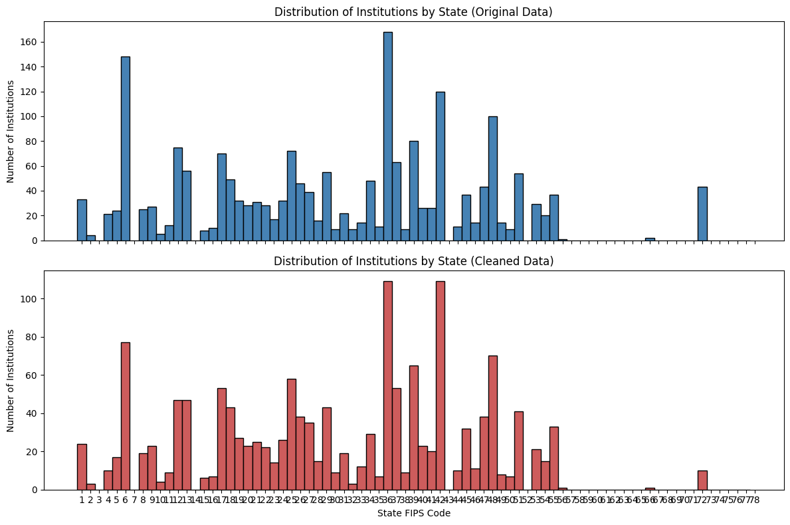
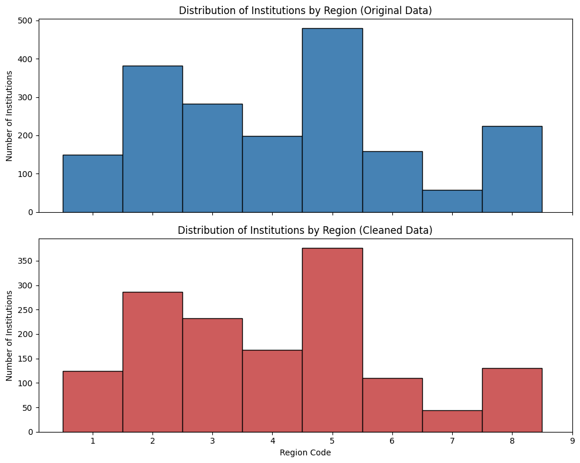
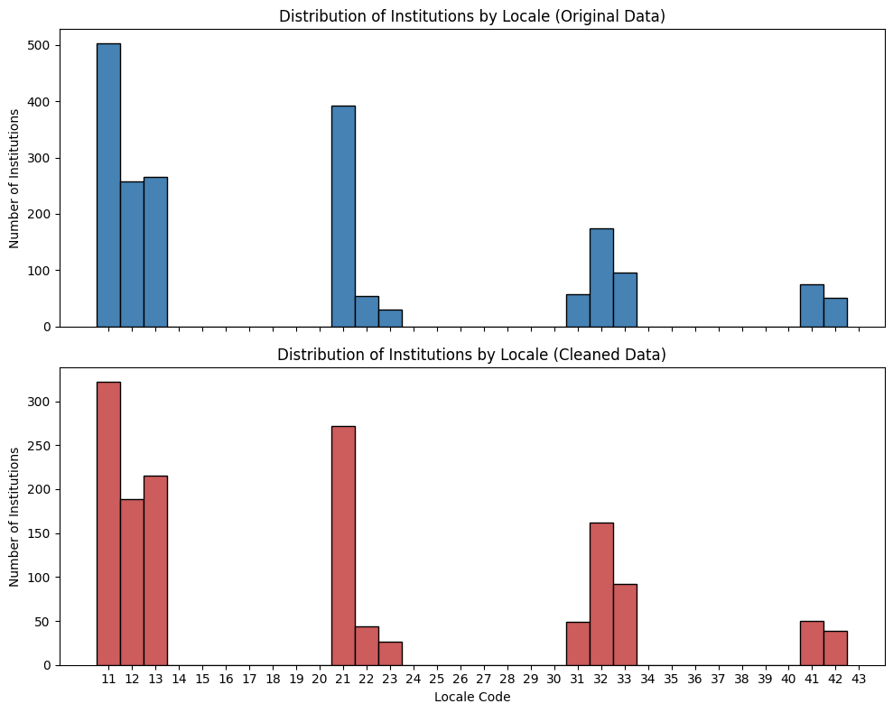
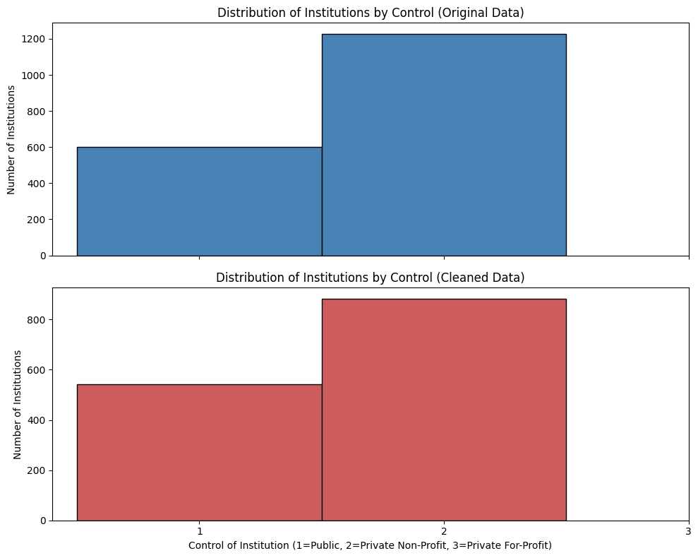
<class 'pandas.core.frame.DataFrame'>
Index: 1481 entries, 0 to 6826
Data columns (total 32 columns):
# Column Non-Null Count Dtype
--- ------ -------------- -----
0 TUITIONFEE_IN 1481 non-null float64
1 TUITIONFEE_OUT 1481 non-null float64
2 ST_FIPS 1481 non-null category
3 REGION 1481 non-null category
4 LOCALE 1481 non-null category
5 CONTROL 1481 non-null category
6 UGDS 1481 non-null float64
7 PCTPELL 1481 non-null float64
8 PCTFLOAN 1481 non-null float64
9 STUFACR 1481 non-null float64
10 C150_4 1481 non-null float64
11 COMP_ORIG_YR4_RT 1481 non-null float64
12 COMP_ORIG_YR6_RT 1481 non-null float64
13 GRAD_DEBT_MDN 1481 non-null float64
14 LO_INC_DEBT_MDN 1481 non-null float64
15 MD_INC_DEBT_MDN 1481 non-null float64
16 HI_INC_DEBT_MDN 1481 non-null float64
17 MD_EARN_WNE_P10 1481 non-null float64
18 PCT10_EARN_WNE_P10 1481 non-null float64
19 PCT25_EARN_WNE_P10 1481 non-null float64
20 PCT75_EARN_WNE_P10 1481 non-null float64
21 PCT90_EARN_WNE_P10 1481 non-null float64
22 MD_EARN_WNE_P6 1481 non-null float64
23 PCT10_EARN_WNE_P6 1481 non-null float64
24 PCT25_EARN_WNE_P6 1481 non-null float64
25 PCT75_EARN_WNE_P6 1481 non-null float64
26 PCT90_EARN_WNE_P6 1481 non-null float64
27 C100_4 1481 non-null float64
28 INSTNM 1481 non-null object
29 CITY 1481 non-null object
30 RET_FT4 1481 non-null float64
31 C200_4 1481 non-null float64
dtypes: category(4), float64(26), object(2)
memory usage: 344.7+ KB
None/tmp/ipykernel_26673/214649059.py:119: SettingWithCopyWarning:
A value is trying to be set on a copy of a slice from a DataFrame.
Try using .loc[row_indexer,col_indexer] = value instead
See the caveats in the documentation: https://pandas.pydata.org/pandas-docs/stable/user_guide/indexing.html#returning-a-view-versus-a-copy
college_final[col] = college_final[col].astype('category')
/tmp/ipykernel_26673/214649059.py:119: SettingWithCopyWarning:
A value is trying to be set on a copy of a slice from a DataFrame.
Try using .loc[row_indexer,col_indexer] = value instead
See the caveats in the documentation: https://pandas.pydata.org/pandas-docs/stable/user_guide/indexing.html#returning-a-view-versus-a-copy
college_final[col] = college_final[col].astype('category')
/tmp/ipykernel_26673/214649059.py:119: SettingWithCopyWarning:
A value is trying to be set on a copy of a slice from a DataFrame.
Try using .loc[row_indexer,col_indexer] = value instead
See the caveats in the documentation: https://pandas.pydata.org/pandas-docs/stable/user_guide/indexing.html#returning-a-view-versus-a-copy
college_final[col] = college_final[col].astype('category')
/tmp/ipykernel_26673/214649059.py:119: SettingWithCopyWarning:
A value is trying to be set on a copy of a slice from a DataFrame.
Try using .loc[row_indexer,col_indexer] = value instead
See the caveats in the documentation: https://pandas.pydata.org/pandas-docs/stable/user_guide/indexing.html#returning-a-view-versus-a-copy
college_final[col] = college_final[col].astype('category')
/tmp/ipykernel_26673/214649059.py:119: SettingWithCopyWarning:
A value is trying to be set on a copy of a slice from a DataFrame.
Try using .loc[row_indexer,col_indexer] = value instead
See the caveats in the documentation: https://pandas.pydata.org/pandas-docs/stable/user_guide/indexing.html#returning-a-view-versus-a-copy
college_final[col] = college_final[col].astype('category')
/tmp/ipykernel_26673/214649059.py:134: SettingWithCopyWarning:
A value is trying to be set on a copy of a slice from a DataFrame.
Try using .loc[row_indexer,col_indexer] = value instead
See the caveats in the documentation: https://pandas.pydata.org/pandas-docs/stable/user_guide/indexing.html#returning-a-view-versus-a-copy
college_final['ST_FIPS'] = college_final['ST_FIPS'].cat.rename_categories(state_fips_mapping)
/tmp/ipykernel_26673/214649059.py:141: SettingWithCopyWarning:
A value is trying to be set on a copy of a slice from a DataFrame.
Try using .loc[row_indexer,col_indexer] = value instead
See the caveats in the documentation: https://pandas.pydata.org/pandas-docs/stable/user_guide/indexing.html#returning-a-view-versus-a-copy
college_final['REGION'] = college_final['REGION'].cat.rename_categories(region_mapping)
/tmp/ipykernel_26673/214649059.py:149: SettingWithCopyWarning:
A value is trying to be set on a copy of a slice from a DataFrame.
Try using .loc[row_indexer,col_indexer] = value instead
See the caveats in the documentation: https://pandas.pydata.org/pandas-docs/stable/user_guide/indexing.html#returning-a-view-versus-a-copy
college_final['LOCALE'] = college_final['LOCALE'].cat.rename_categories(locale_mapping)
/tmp/ipykernel_26673/214649059.py:155: SettingWithCopyWarning:
A value is trying to be set on a copy of a slice from a DataFrame.
Try using .loc[row_indexer,col_indexer] = value instead
See the caveats in the documentation: https://pandas.pydata.org/pandas-docs/stable/user_guide/indexing.html#returning-a-view-versus-a-copy
college_final['CONTROL'] = college_final['CONTROL'].cat.rename_categories(control_mapping)3. Descriptive Statistics & Visualizations
# understand what the data looks like after selecting columns of interest
print(college_final.describe())
print(college_final.info(verbose=True, show_counts=True))
# going to save this as its own csv so that i can use it for the presentation
# college_final.to_csv('/workspaces/final-project-ava-lasater/data/CollegeScorecard_Preprocessed.csv', index=False)
# distributions of numerical variables
'''
This graph is recreated later in the notebook
# used ChatGPT to help me plotting all the numerical columns in a grid layout
numerical_columns = college_final.select_dtypes(include=['number']).columns
n_cols = 3 # number of plots per row
n_rows = math.ceil(len(numerical_columns) / n_cols)
fig, axes = plt.subplots(n_rows, n_cols, figsize=(18, n_rows * 4))
axes = axes.flatten()
for i, col in enumerate(numerical_columns):
sns.histplot(college_final[col], bins=30, kde=True, color='steelblue', ax=axes[i])
axes[i].set_title(f'Distribution of {col}')
axes[i].set_xlabel(col)
axes[i].set_ylabel('Frequency')
# Turn off any unused subplots
for j in range(i + 1, len(axes)):
axes[j].axis('off')
plt.tight_layout()
plt.show()
'''
# for the numerical values, want to look at the correlations
numerical_columns = college_final.select_dtypes(include=['number']).columns
plt.figure(figsize=(12, 10))
correlation_matrix = college_final[numerical_columns].corr()
sns.heatmap(correlation_matrix, annot=False, fmt=".2f", cmap='coolwarm', cbar=True)
plt.title('Correlation Matrix of Numerical Variables')
plt.tight_layout()
plt.show()
# going to create three subsets of the data for scatter matrix plots
'''
Below are scatter matrix plots for different subsets of numerical variables to visualize pairwise relationships.
These graphs can be found in the images section, but are not run here to preserve memory and processing power.
# cost variables and outcome variables
cost_outcome_columns = ['TUITIONFEE_IN', 'TUITIONFEE_OUT', 'GRAD_DEBT_MDN', 'LO_INC_DEBT_MDN',
'MD_INC_DEBT_MDN', 'HI_INC_DEBT_MDN', 'COMP_ORIG_YR4_RT', 'RET_FT4', 'C100_4', 'MD_EARN_WNE_P10', 'MD_EARN_WNE_P6']
cost_outcome_data = college_final[cost_outcome_columns]
scatter_matrix(cost_outcome_data, alpha=0.2, figsize=(15, 15), diagonal='kde', color='cornflowerblue')
plt.suptitle('Scatter Matrix of Cost and Outcome Variables', y=1.02)
plt.tight_layout()
plt.show()
# cost variables and prestige/quality variables
cost_prestige_columns = ['TUITIONFEE_IN', 'TUITIONFEE_OUT', 'GRAD_DEBT_MDN', 'LO_INC_DEBT_MDN',
'MD_INC_DEBT_MDN', 'HI_INC_DEBT_MDN', 'PCTPELL', 'PCTFLOAN', 'STUFACR']
cost_prestige_data = college_final[cost_prestige_columns]
scatter_matrix(cost_prestige_data, alpha=0.2, figsize=(15, 15), diagonal='kde', color='palevioletred')
plt.suptitle('Scatter Matrix of Cost and Prestige/Quality Variables', y=1.02)
plt.tight_layout()
plt.show()
# outcome variables and prestige/quality variables
outcome_prestige_columns = ['COMP_ORIG_YR4_RT', 'RET_FT4', 'C100_4', 'MD_EARN_WNE_P10', 'MD_EARN_WNE_P6', 'PCTPELL', 'PCTFLOAN', 'STUFACR']
outcome_prestige_data = college_final[outcome_prestige_columns]
scatter_matrix(outcome_prestige_data, alpha=0.2, figsize=(15, 15), diagonal='kde', color='darkcyan')
plt.suptitle('Scatter Matrix of Outcome and Prestige/Quality Variables', y=1.02)
plt.tight_layout()
plt.show()
''' TUITIONFEE_IN TUITIONFEE_OUT UGDS PCTPELL PCTFLOAN \
count 1481.000000 1481.000000 1481.000000 1481.000000 1481.000000
mean 27485.114787 31951.395679 5567.112762 0.334866 0.481919
std 17665.973009 14856.176987 9785.399185 0.144309 0.181078
min 3195.000000 4656.000000 25.000000 0.052400 0.029600
25% 11188.000000 19619.000000 1075.000000 0.226500 0.348800
50% 24510.000000 30220.000000 2180.000000 0.312100 0.481400
75% 39708.000000 40880.000000 5697.000000 0.414300 0.613500
max 69330.000000 69330.000000 156755.000000 0.860300 0.929700
STUFACR C150_4 COMP_ORIG_YR4_RT COMP_ORIG_YR6_RT \
count 1481.000000 1481.000000 1481.000000 1481.000000
mean 13.875084 0.561051 0.513457 0.543765
std 5.634587 0.189175 0.174345 0.172490
min 2.000000 0.000000 0.049223 0.072273
25% 11.000000 0.442300 0.397734 0.432177
50% 13.000000 0.565200 0.510949 0.543189
75% 16.000000 0.689000 0.625253 0.656757
max 132.000000 1.000000 0.946249 0.950820
GRAD_DEBT_MDN ... PCT75_EARN_WNE_P10 PCT90_EARN_WNE_P10 \
count 1481.000000 ... 1481.000000 1481.000000
mean 23036.513842 ... 82358.284943 84387.373396
std 4350.482798 ... 22332.415445 23023.457689
min 5500.000000 ... 38614.000000 40700.000000
25% 20500.000000 ... 68061.000000 70500.000000
50% 23500.000000 ... 78569.000000 80200.000000
75% 26000.000000 ... 91311.000000 92900.000000
max 43021.000000 ... 243025.000000 250000.000000
MD_EARN_WNE_P6 PCT10_EARN_WNE_P6 PCT25_EARN_WNE_P6 \
count 1481.000000 1481.000000 1481.000000
mean 47431.266036 9809.858204 29581.433491
std 12487.951508 3872.075712 9601.151383
min 20637.000000 1300.000000 8601.000000
25% 39650.000000 7300.000000 23677.000000
50% 45676.000000 9500.000000 28920.000000
75% 52795.000000 11600.000000 34250.000000
max 131633.000000 31600.000000 93246.000000
PCT75_EARN_WNE_P6 PCT90_EARN_WNE_P6 C100_4 RET_FT4 \
count 1481.000000 1481.000000 1481.000000 1481.000000
mean 67415.802161 65080.553680 0.430691 0.744251
std 16855.894403 17728.811105 0.200380 0.134244
min 33321.000000 31200.000000 0.000000 0.000000
25% 56532.000000 54800.000000 0.288400 0.678600
50% 64995.000000 62400.000000 0.424300 0.758000
75% 74966.000000 71200.000000 0.571400 0.832600
max 203864.000000 233800.000000 1.000000 1.000000
C200_4
count 1481.000000
mean 0.571183
std 0.192496
min 0.000000
25% 0.450000
50% 0.582600
75% 0.706100
max 1.000000
[8 rows x 26 columns]
<class 'pandas.core.frame.DataFrame'>
Index: 1481 entries, 0 to 6826
Data columns (total 32 columns):
# Column Non-Null Count Dtype
--- ------ -------------- -----
0 TUITIONFEE_IN 1481 non-null float64
1 TUITIONFEE_OUT 1481 non-null float64
2 ST_FIPS 1481 non-null category
3 REGION 1481 non-null category
4 LOCALE 1481 non-null category
5 CONTROL 1481 non-null category
6 UGDS 1481 non-null float64
7 PCTPELL 1481 non-null float64
8 PCTFLOAN 1481 non-null float64
9 STUFACR 1481 non-null float64
10 C150_4 1481 non-null float64
11 COMP_ORIG_YR4_RT 1481 non-null float64
12 COMP_ORIG_YR6_RT 1481 non-null float64
13 GRAD_DEBT_MDN 1481 non-null float64
14 LO_INC_DEBT_MDN 1481 non-null float64
15 MD_INC_DEBT_MDN 1481 non-null float64
16 HI_INC_DEBT_MDN 1481 non-null float64
17 MD_EARN_WNE_P10 1481 non-null float64
18 PCT10_EARN_WNE_P10 1481 non-null float64
19 PCT25_EARN_WNE_P10 1481 non-null float64
20 PCT75_EARN_WNE_P10 1481 non-null float64
21 PCT90_EARN_WNE_P10 1481 non-null float64
22 MD_EARN_WNE_P6 1481 non-null float64
23 PCT10_EARN_WNE_P6 1481 non-null float64
24 PCT25_EARN_WNE_P6 1481 non-null float64
25 PCT75_EARN_WNE_P6 1481 non-null float64
26 PCT90_EARN_WNE_P6 1481 non-null float64
27 C100_4 1481 non-null float64
28 INSTNM 1481 non-null object
29 CITY 1481 non-null object
30 RET_FT4 1481 non-null float64
31 C200_4 1481 non-null float64
dtypes: category(4), float64(26), object(2)
memory usage: 344.7+ KB
None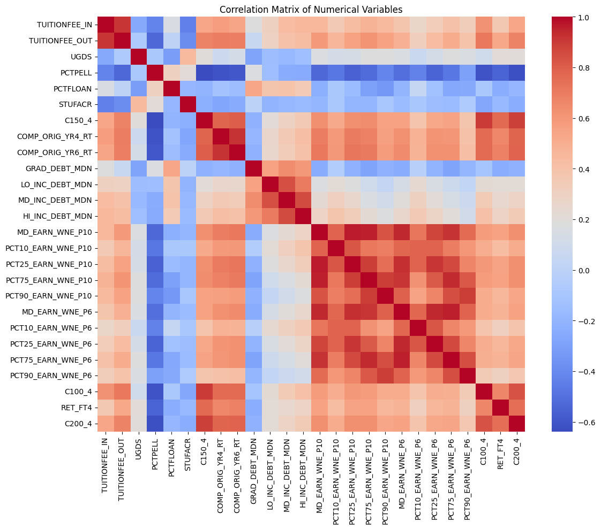
"\nBelow are scatter matrix plots for different subsets of numerical variables to visualize pairwise relationships.\nThese graphs can be found in the images section, but are not run here to preserve memory and processing power.\n\n# cost variables and outcome variables\ncost_outcome_columns = ['TUITIONFEE_IN', 'TUITIONFEE_OUT', 'GRAD_DEBT_MDN', 'LO_INC_DEBT_MDN',\n 'MD_INC_DEBT_MDN', 'HI_INC_DEBT_MDN', 'COMP_ORIG_YR4_RT', 'RET_FT4', 'C100_4', 'MD_EARN_WNE_P10', 'MD_EARN_WNE_P6']\ncost_outcome_data = college_final[cost_outcome_columns]\nscatter_matrix(cost_outcome_data, alpha=0.2, figsize=(15, 15), diagonal='kde', color='cornflowerblue')\nplt.suptitle('Scatter Matrix of Cost and Outcome Variables', y=1.02)\nplt.tight_layout()\nplt.show()\n\n# cost variables and prestige/quality variables\ncost_prestige_columns = ['TUITIONFEE_IN', 'TUITIONFEE_OUT', 'GRAD_DEBT_MDN', 'LO_INC_DEBT_MDN',\n 'MD_INC_DEBT_MDN', 'HI_INC_DEBT_MDN', 'PCTPELL', 'PCTFLOAN', 'STUFACR']\ncost_prestige_data = college_final[cost_prestige_columns]\nscatter_matrix(cost_prestige_data, alpha=0.2, figsize=(15, 15), diagonal='kde', color='palevioletred')\nplt.suptitle('Scatter Matrix of Cost and Prestige/Quality Variables', y=1.02)\nplt.tight_layout()\nplt.show() \n\n# outcome variables and prestige/quality variables\noutcome_prestige_columns = ['COMP_ORIG_YR4_RT', 'RET_FT4', 'C100_4', 'MD_EARN_WNE_P10', 'MD_EARN_WNE_P6', 'PCTPELL', 'PCTFLOAN', 'STUFACR']\noutcome_prestige_data = college_final[outcome_prestige_columns]\nscatter_matrix(outcome_prestige_data, alpha=0.2, figsize=(15, 15), diagonal='kde', color='darkcyan')\nplt.suptitle('Scatter Matrix of Outcome and Prestige/Quality Variables', y=1.02)\nplt.tight_layout()\nplt.show()\n"Sanity Checks
Now that I have had a chance to look at the data closer, I am going to perform some sanity checks and look closer at the data to make sure it makes sense
# the first thing I going to look at is enrollment size
# lets see what the extreme values are for enrollment size
print('Minimum enrollment size:', college_final['UGDS'].min())
print('Maximum enrollment size:', college_final['UGDS'].max())
# now lets look at what institutions have those extreme values
min_enrollment = college_final[college_final['UGDS'] == college_final['UGDS'].min()]
max_enrollment = college_final[college_final['UGDS'] == college_final['UGDS'].max()]
print('Institution with minimum enrollment size:')
print(min_enrollment[['INSTNM', 'CITY', 'UGDS']])
print('\nInstitution with maximum enrollment size:')
print(max_enrollment[['INSTNM', 'CITY', 'UGDS']])
# a quick google search confirms that these values are accurate
# now I want to look at the student-faculty ratio
print('\n', 'Minimum student-faculty ratio:', college_final['STUFACR'].min())
print('Maximum student-faculty ratio:', college_final['STUFACR'].max())
min_stufacr = college_final[college_final['STUFACR'] == college_final['STUFACR'].min()]
max_stufacr = college_final[college_final['STUFACR'] == college_final['STUFACR'].max()]
print('Institution with minimum student-faculty ratio:')
print(min_stufacr[['INSTNM', 'CITY', 'STUFACR']])
print('\nInstitution with maximum student-faculty ratio:')
print(max_stufacr[['INSTNM', 'CITY', 'STUFACR']])
# at a quick glance, the Univeristy of Pheonix numbers make sense as it has mnay online programs
# now i want to look at the completion rates
print('\n', 'Minimum 4-year completion rate:', college_final['C100_4'].min())
print('Maximum 4-year completion rate:', college_final['C100_4'].max())
min_c100_4 = college_final[college_final['C100_4'] == college_final['C100_4'].min()]
max_c100_4 = college_final[college_final['C100_4'] == college_final['C100_4'].max()]
print('Institution with minimum 4-year completion rate:')
print(min_c100_4[['INSTNM', 'CITY', 'C100_4', 'C150_4', 'C200_4']])
print('\nInstitution with maximum 4-year completion rate:')
print(max_c100_4[['INSTNM', 'CITY', 'C100_4']])
# there are many schools with 0% completion rates, likely due to being very small or specialized institutions
# a google search reveals that many of these schools are specialized institutions, such as health specialized schools, that still offer primarily bachelor's degrees
# after looking at the completion rates after longer time periods, it seems that some of these schools do have completions, just not within 4 years
# i am going to remove schools that have 0% completion rates across all three time periods (4-year, 6-year, and 8-year) since it suggest there could be data missing or that the school is not focused on degree completion
college_final = college_final[~((college_final['C100_4'] == 0) & (college_final['C150_4'] == 0) & (college_final['C200_4'] == 0))]
print('Size of combined data after removing schools with 0 percent completion rates across all time periods:', college_final.shape)
# now lets look at the retention rates
print('\n', 'Minimum retention rate:', college_final['RET_FT4'].min())
print('Maximum retention rate:', college_final['RET_FT4'].max())
min_ret_ft4 = college_final[college_final['RET_FT4'] == college_final['RET_FT4'].min()]
max_ret_ft4 = college_final[college_final['RET_FT4'] == college_final['RET_FT4'].max()]
print('Institution with minimum retention rate:')
print(min_ret_ft4[['INSTNM', 'CITY', 'RET_FT4']])
print('\nInstitution with maximum retention rate:')
print(max_ret_ft4[['INSTNM', 'CITY', 'RET_FT4']])
# after seaching each of the schools with 0% retention are either not considered valid institutions or are closed
# therefore, i am going to drop schools with 0% retention rates
college_final = college_final[college_final['RET_FT4'] > 0]
print('Size of combined data after removing schools with 0 percent retention rates:', college_final.shape)
'''
Commented to save processing power
# going to rerun the visualization
numerical_columns = college_final.select_dtypes(include=['number']).columns
n_cols = 3 # number of plots per row
n_rows = math.ceil(len(numerical_columns) / n_cols)
fig, axes = plt.subplots(n_rows, n_cols, figsize=(18, n_rows * 4))
axes = axes.flatten()
for i, col in enumerate(numerical_columns):
sns.histplot(college_final[col], bins=30, kde=True, color='steelblue', ax=axes[i])
axes[i].set_title(f'Distribution of {col}')
axes[i].set_xlabel(col)
axes[i].set_ylabel('Frequency')
# Turn off any unused subplots
for j in range(i + 1, len(axes)):
axes[j].axis('off')
plt.tight_layout()
plt.show()
'''Minimum enrollment size: 25.0
Maximum enrollment size: 156755.0
Institution with minimum enrollment size:
INSTNM CITY UGDS
6812 DeVry University-Virginia Arlington 25.0
Institution with maximum enrollment size:
INSTNM CITY UGDS
3275 Southern New Hampshire University Manchester 156755.0
Minimum student-faculty ratio: 2.0
Maximum student-faculty ratio: 132.0
Institution with minimum student-faculty ratio:
INSTNM CITY STUFACR
1478 Lincoln Christian University Lincoln 2.0
6812 DeVry University-Virginia Arlington 2.0
Institution with maximum student-faculty ratio:
INSTNM CITY STUFACR
933 University of Phoenix-Arizona Phoenix 132.0
Minimum 4-year completion rate: 0.0
Maximum 4-year completion rate: 1.0
Institution with minimum 4-year completion rate:
INSTNM CITY \
12 South University-Montgomery Montgomery
1183 South University-West Palm Beach Royal Palm Beach
1319 South University-Savannah Savannah
1810 Trine University-Regional/Non-Traditional Camp... Angola
1887 Strayer University-Florida Tampa
1933 Polytechnic University of Puerto Rico-Orlando Orlando
2611 Northeastern University Boston
2867 Strayer University-Maryland Suitland
3575 Central Methodist University-College of Gradua... Fayette
3593 Strayer University-North Carolina Greensboro
3646 South University-High Point High Point
3655 Chamberlain University-New Jersey North Brunswick
3685 Drury University-College of Continuing Profess... Springfield
4901 Chamberlain University-Ohio Columbus
5018 Chamberlain University-Nevada Las Vegas
5500 National American University-Rapid City Rapid City
5521 Bethel University McKenzie
5855 South University-Columbia Columbia
6007 Strayer University-Tennessee Memphis
6088 Strayer University-South Carolina Greenville
6103 Johnson & Wales University-Online Providence
6117 Chamberlain University-Texas Houston
6134 South University-Austin Round Rock
6485 Strayer University-Virginia Arlington
C100_4 C150_4 C200_4
12 0.0 0.1538 0.1364
1183 0.0 0.2143 0.3571
1319 0.0 0.2273 0.1429
1810 0.0 1.0000 0.0000
1887 0.0 0.0000 0.1429
1933 0.0 0.0833 0.5000
2611 0.0 0.9038 0.9107
2867 0.0 0.0000 0.2222
3575 0.0 0.0000 0.0000
3593 0.0 0.1667 0.0000
3646 0.0 0.0000 0.1818
3655 0.0 0.0000 1.0000
3685 0.0 0.3208 0.2308
4901 0.0 0.0000 0.5000
5018 0.0 0.0000 0.0000
5500 0.0 0.6000 0.1250
5521 0.0 0.3490 0.3526
5855 0.0 0.0000 0.0800
6007 0.0 0.0000 0.0000
6088 0.0 0.0000 0.0000
6103 0.0 0.0000 0.0000
6117 0.0 0.0000 0.0000
6134 0.0 0.0909 0.2667
6485 0.0 0.1333 0.2727
Institution with maximum 4-year completion rate:
INSTNM CITY C100_4
300 Humphreys University-Stockton and Modesto Camp... Stockton 1.0
1998 Chamberlain University-Indiana Indianapolis 1.0
6812 DeVry University-Virginia Arlington 1.0
Size of combined data after removing schools with 0 percent completion rates across all time periods: (1475, 32)
Minimum retention rate: 0.0
Maximum retention rate: 1.0
Institution with minimum retention rate:
INSTNM CITY RET_FT4
1478 Lincoln Christian University Lincoln 0.0
3593 Strayer University-North Carolina Greensboro 0.0
4979 DeVry College of New York New York 0.0
Institution with maximum retention rate:
INSTNM CITY RET_FT4
300 Humphreys University-Stockton and Modesto Camp... Stockton 1.0
1771 Hodges University Fort Myers 1.0
1810 Trine University-Regional/Non-Traditional Camp... Angola 1.0
1937 Chamberlain University-Florida Jacksonville 1.0
2032 DeVry University-Georgia Decatur 1.0
Size of combined data after removing schools with 0 percent retention rates: (1472, 32)"\nCommented to save processing power \n# going to rerun the visualization\nnumerical_columns = college_final.select_dtypes(include=['number']).columns\nn_cols = 3 # number of plots per row\nn_rows = math.ceil(len(numerical_columns) / n_cols)\n\nfig, axes = plt.subplots(n_rows, n_cols, figsize=(18, n_rows * 4))\naxes = axes.flatten()\n\nfor i, col in enumerate(numerical_columns):\n sns.histplot(college_final[col], bins=30, kde=True, color='steelblue', ax=axes[i])\n axes[i].set_title(f'Distribution of {col}')\n axes[i].set_xlabel(col)\n axes[i].set_ylabel('Frequency')\n\n# Turn off any unused subplots\nfor j in range(i + 1, len(axes)):\n axes[j].axis('off')\n\nplt.tight_layout()\nplt.show()\n"Outliers and Further Cleaning
In the next section I will investigate outliers and continue remove columns that are not necessary
# first, I want to remove the student faculty ratio, since it is highly skewed, and may not provide useful information in its current form
college_final_v2 = college_final.drop(columns=['STUFACR'])
# now lets look at the outliers for the numerical variables
print("Outliers for each numerical value:")
numerical_cols = college_final_v2.select_dtypes(include=['number']).columns
college_nums = college_final_v2[numerical_cols]
for col in numerical_cols:
# List of the values in i_col
data_i = college_nums.loc[:,col]
# Define the 25th and 75th percentiles
q25, q75 = round((data_i.quantile(q = 0.25)), 3), round((data_i.quantile(q = 0.75)), 3)
# Define the interquartile range from the 25th and 75th percentiles defined above
IQR = round((q75 - q25), 3)
# Calculate the outlier cutoff
cut_off = IQR * 1.5
# Define lower and upper cut-offs
lower, upper = round((q25 - cut_off), 3), round((q75 + cut_off), 3)
# Print the values
print(' ')
# For each value of i_col, print the 25th and 75th percentiles and IQR
print(col, 'q25 =', q25, 'q75 =', q75, 'IQR =', IQR)
# Print the lower and upper cut-offs
print('lower, upper:', lower, upper)
# Count the number of outliers outside the (lower, upper) limits, print that value
print('Number of Outliers: ', data_i[(data_i < lower) | (data_i > upper)].count())
# based on the outlier analysis, I will not remove outliers, but I will log transform some of the highly skewed variables to see if it improves their distributions
# i will perform transformations later for each specific analysis as neededOutliers for each numerical value:
TUITIONFEE_IN q25 = 11176.0 q75 = 39915.75 IQR = 28739.75
lower, upper: -31933.625 83025.375
Number of Outliers: 0
TUITIONFEE_OUT q25 = 19686.0 q75 = 40957.5 IQR = 21271.5
lower, upper: -12221.25 72864.75
Number of Outliers: 0
UGDS q25 = 1076.5 q75 = 5789.75 IQR = 4713.25
lower, upper: -5993.375 12859.625
Number of Outliers: 168
PCTPELL q25 = 0.226 q75 = 0.412 IQR = 0.186
lower, upper: -0.053 0.691
Number of Outliers: 38
PCTFLOAN q25 = 0.349 q75 = 0.614 IQR = 0.265
lower, upper: -0.049 1.012
Number of Outliers: 0
C150_4 q25 = 0.444 q75 = 0.689 IQR = 0.245
lower, upper: 0.077 1.056
Number of Outliers: 9
COMP_ORIG_YR4_RT q25 = 0.399 q75 = 0.625 IQR = 0.226
lower, upper: 0.06 0.964
Number of Outliers: 3
COMP_ORIG_YR6_RT q25 = 0.434 q75 = 0.657 IQR = 0.223
lower, upper: 0.099 0.992
Number of Outliers: 1
GRAD_DEBT_MDN q25 = 20500.0 q75 = 26000.0 IQR = 5500.0
lower, upper: 12250.0 34250.0
Number of Outliers: 36
LO_INC_DEBT_MDN q25 = 12666.75 q75 = 19000.0 IQR = 6333.25
lower, upper: 3166.875 28499.875
Number of Outliers: 2
MD_INC_DEBT_MDN q25 = 13600.0 q75 = 19500.0 IQR = 5900.0
lower, upper: 4750.0 28350.0
Number of Outliers: 0
HI_INC_DEBT_MDN q25 = 14000.0 q75 = 19500.0 IQR = 5500.0
lower, upper: 5750.0 27750.0
Number of Outliers: 5
MD_EARN_WNE_P10 q25 = 47085.5 q75 = 63435.0 IQR = 16349.5
lower, upper: 22561.25 87959.25
Number of Outliers: 62
PCT10_EARN_WNE_P10 q25 = 8900.0 q75 = 14400.0 IQR = 5500.0
lower, upper: 650.0 22650.0
Number of Outliers: 44
PCT25_EARN_WNE_P10 q25 = 29081.0 q75 = 41254.0 IQR = 12173.0
lower, upper: 10821.5 59513.5
Number of Outliers: 59
PCT75_EARN_WNE_P10 q25 = 68146.25 q75 = 91324.5 IQR = 23178.25
lower, upper: 33378.875 126091.875
Number of Outliers: 64
PCT90_EARN_WNE_P10 q25 = 70500.0 q75 = 92800.0 IQR = 22300.0
lower, upper: 37050.0 126250.0
Number of Outliers: 72
MD_EARN_WNE_P6 q25 = 39702.5 q75 = 52797.0 IQR = 13094.5
lower, upper: 20060.75 72438.75
Number of Outliers: 61
PCT10_EARN_WNE_P6 q25 = 7200.0 q75 = 11600.0 IQR = 4400.0
lower, upper: 600.0 18200.0
Number of Outliers: 46
PCT25_EARN_WNE_P6 q25 = 23712.25 q75 = 34250.0 IQR = 10537.75
lower, upper: 7905.625 50056.625
Number of Outliers: 49
PCT75_EARN_WNE_P6 q25 = 56532.0 q75 = 74975.5 IQR = 18443.5
lower, upper: 28866.75 102640.75
Number of Outliers: 60
PCT90_EARN_WNE_P6 q25 = 54875.0 q75 = 71100.0 IQR = 16225.0
lower, upper: 30537.5 95437.5
Number of Outliers: 64
C100_4 q25 = 0.291 q75 = 0.571 IQR = 0.28
lower, upper: -0.129 0.991
Number of Outliers: 3
RET_FT4 q25 = 0.681 q75 = 0.833 IQR = 0.152
lower, upper: 0.453 1.061
Number of Outliers: 33
C200_4 q25 = 0.453 q75 = 0.708 IQR = 0.255
lower, upper: 0.07 1.09
Number of Outliers: 94. Regression Analysis
Preprocessing and Feature Selection for Regression Analysis
Need to make dummy variables and scale data for regressions
# first need to select columns for linear regression
# I am selecting the median earnings 10 years after entry as the outcome variable since it is more normally distributed
regression_columns = ['TUITIONFEE_IN', 'TUITIONFEE_OUT', 'GRAD_DEBT_MDN', 'RET_FT4', 'C100_4',
'PCTPELL', 'UGDS', 'MD_EARN_WNE_P10']
# initially, going to leave in some of the other outcome variables to see how they perform as predictors
# now i need to make dummy variables for the categorical columns
categorical_columns = ['REGION', 'LOCALE', 'CONTROL']
# including state fips as dummy variables creates too many features
college_regression = college_final_v2[regression_columns + categorical_columns]
college_regression = pd.get_dummies(college_regression, columns=categorical_columns, drop_first=True, dtype=int)
print('Size of data for regression analysis:', college_regression.shape)
print(college_regression.info(verbose=True, show_counts=True))\
# now that we have our dataset, I am going to do some data transformations to improve normality of some variables
# looking at the distributions of the numerical variables for regression
'''
numerical_columns = ['TUITIONFEE_IN', 'TUITIONFEE_OUT', 'GRAD_DEBT_MDN', 'RET_FT4', 'C100_4',
'PCTPELL', 'UGDS', 'MD_EARN_WNE_P10']
n_cols = 3 # number of plots per row
n_rows = math.ceil(len(numerical_columns) / n_cols)
fig, axes = plt.subplots(n_rows, n_cols, figsize=(18, n_rows * 4))
axes = axes.flatten()
for i, col in enumerate(numerical_columns):
sns.histplot(college_regression[col], bins=30, kde=True, color='steelblue', ax=axes[i])
axes[i].set_title(f'Distribution of {col}')
axes[i].set_xlabel(col)
axes[i].set_ylabel('Frequency')
# Turn off any unused subplots
for j in range(i + 1, len(axes)):
axes[j].axis('off')
plt.tight_layout()
plt.show()
'''
# I am going to log transform the skewed varaibles: TUITIONFEE_IN, TUITIONFEE_OUT, UGDS, RET_FT4
skewed_columns = ['TUITIONFEE_IN', 'TUITIONFEE_OUT', 'UGDS', 'RET_FT4']
for col in skewed_columns:
college_regression[col] = np.log1p(college_regression[col]) # log1p to handle zero values
# lastly, going to scale variables for analysis
scale_vars = ["UGDS", "TUITIONFEE_IN", "TUITIONFEE_OUT", "C100_4", "RET_FT4", "GRAD_DEBT_MDN"]
scaler = StandardScaler()
college_regression[scale_vars] = scaler.fit_transform(college_regression[scale_vars])
# recheck distributions after transformation
numerical_columns = ["UGDS", "TUITIONFEE_IN", "TUITIONFEE_OUT", "C100_4", "RET_FT4", "GRAD_DEBT_MDN"]
n_cols = 3 # number of plots per row
n_rows = math.ceil(len(numerical_columns) / n_cols)
fig, axes = plt.subplots(n_rows, n_cols, figsize=(18, n_rows * 4))
axes = axes.flatten()
for i, col in enumerate(numerical_columns):
sns.histplot(college_regression[col], bins=30, kde=True, color='indianred', ax=axes[i])
axes[i].set_title(f'Distribution of {col} After Log Transformation and Scaling')
axes[i].set_xlabel(col)
axes[i].set_ylabel('Frequency')
for j in range(i + 1, len(axes)):
axes[j].axis('off')
plt.tight_layout()
plt.show()
# quick correlation matrix to understand our varaibles
numerical_columns = college_regression.select_dtypes(include=['number']).columns
plt.figure(figsize=(12, 10))
correlation_matrix = college_regression[numerical_columns].corr()
sns.heatmap(correlation_matrix, annot=False, fmt=".2f", cmap='coolwarm', cbar=True)
plt.title('Correlation Matrix of Numerical Variables')
plt.tight_layout()
plt.show()Size of data for regression analysis: (1472, 29)
<class 'pandas.core.frame.DataFrame'>
Index: 1472 entries, 0 to 6826
Data columns (total 29 columns):
# Column Non-Null Count Dtype
--- ------ -------------- -----
0 TUITIONFEE_IN 1472 non-null float64
1 TUITIONFEE_OUT 1472 non-null float64
2 GRAD_DEBT_MDN 1472 non-null float64
3 RET_FT4 1472 non-null float64
4 C100_4 1472 non-null float64
5 PCTPELL 1472 non-null float64
6 UGDS 1472 non-null float64
7 MD_EARN_WNE_P10 1472 non-null float64
8 REGION_Mid East 1472 non-null int64
9 REGION_Great Lakes 1472 non-null int64
10 REGION_Plains 1472 non-null int64
11 REGION_Southeast 1472 non-null int64
12 REGION_Southwest 1472 non-null int64
13 REGION_Rocky Mountains 1472 non-null int64
14 REGION_Far West 1472 non-null int64
15 REGION_Outlying Areas 1472 non-null int64
16 LOCALE_City: Midsize 1472 non-null int64
17 LOCALE_City: Small 1472 non-null int64
18 LOCALE_Suburb: Large 1472 non-null int64
19 LOCALE_Suburb: Midsize 1472 non-null int64
20 LOCALE_Suburb: Small 1472 non-null int64
21 LOCALE_Town: Fringe 1472 non-null int64
22 LOCALE_Town: Distant 1472 non-null int64
23 LOCALE_Town: Remote 1472 non-null int64
24 LOCALE_Rural: Fringe 1472 non-null int64
25 LOCALE_Rural: Distant 1472 non-null int64
26 LOCALE_Rural: Remote 1472 non-null int64
27 CONTROL_Private Non-Profit 1472 non-null int64
28 CONTROL_Private For-Profit 1472 non-null int64
dtypes: float64(8), int64(21)
memory usage: 345.0 KB
None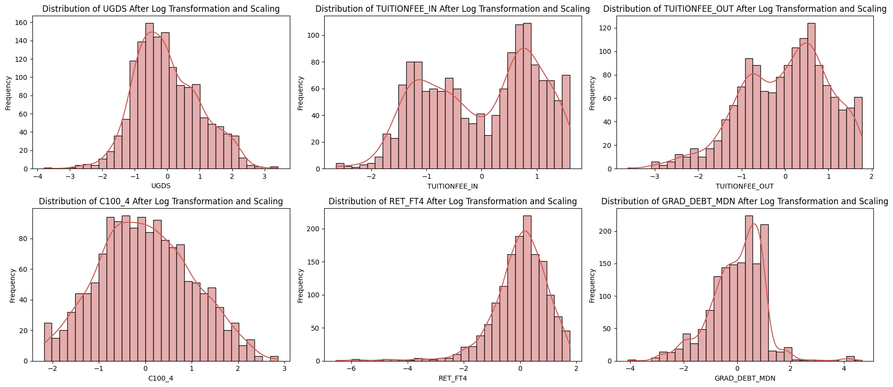
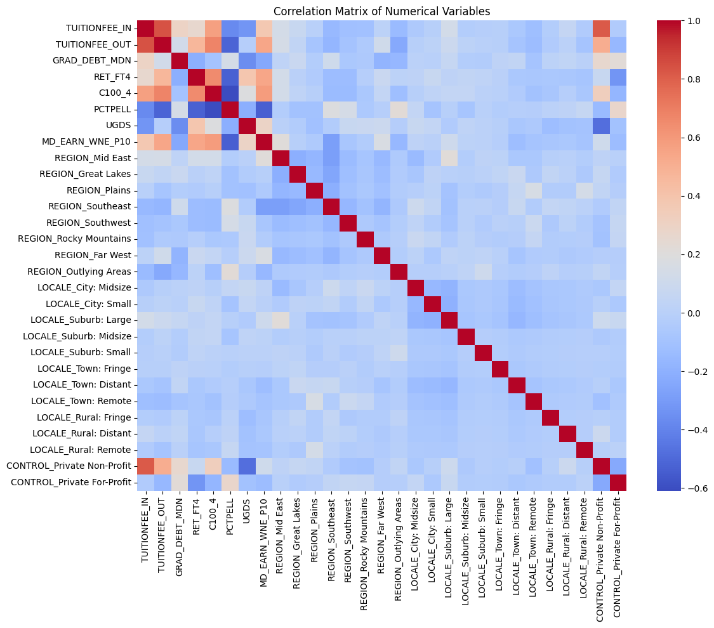
Model Building
# split the dataset
y = college_regression['MD_EARN_WNE_P10']
# X = all columns except the target
X = college_regression.drop(columns=['MD_EARN_WNE_P10'])
# Train-test split
X_train, X_test, y_train, y_test = train_test_split(X, y, test_size = 0.2, random_state = 42)
# Adding a constant for OLS
X_train_with_const = sm.add_constant(X_train)
X_test_with_const = sm.add_constant(X_test)
# Fitting the OLS model
model = sm.OLS(y_train, X_train_with_const).fit()
# Making predictions
y_pred = model.predict(X_test_with_const)
'''
The graph is updated for new model in next section
# Evaluating the model
# creating a residual plot
X_test_with_const = sm.add_constant(X_test)
predictions = model.predict(X_test_with_const)
predictions = pd.to_numeric(predictions, errors='coerce')
residuals = y_test - predictions
residuals = pd.to_numeric(residuals, errors='coerce').fillna(0)
# residual plot
# used AI to help to format these into subplots quicker; asked AI to make my 4 graphs into one
fig, axes = plt.subplots(2, 2, figsize=(14, 12))
sns.residplot(x=predictions, y=residuals, lowess=False, ax=axes[0,0], color = 'steelblue')
axes[0,0].set_xlabel('Predicted Values')
axes[0,0].set_ylabel('Residuals')
axes[0,0].set_title('Residuals vs Fitted')
# regression fit
axes[0,1].scatter(predictions, y_test, label='Data', color = 'steelblue')
axes[0,1].plot(y_test, y_test, color='red', label='Ideal Fit')
axes[0,1].set_xlabel('Predicted Days Lasted')
axes[0,1].set_ylabel('Actual Days Lasted')
axes[0,1].set_title('Predicted vs Actual')
axes[0,1].legend()
# Q-Q plot
sm.qqplot(residuals, line='45', fit=True, ax=axes[1,0], markerfacecolor='steelblue', markeredgecolor='steelblue')
axes[1,0].set_title('Q-Q Plot of Residuals')
# residual distribution
sns.histplot(residuals, ax=axes[1,1], color = 'cornflowerblue')
axes[1,1].set_title('Residual Distribution')
axes[1,1].set_xlabel('Residuals')
plt.tight_layout()
plt.show()
'''
VIFs = [variance_inflation_factor(X.values, i) for i in range(X.shape[1])]
for idx, vif in enumerate(VIFs):
print(f"VIF for column {X.columns[idx]}: {vif}")
# first, let's look at the model results
model_summary2 = model.summary2()
print(model_summary2)
# Calculating MSE
mse = mean_squared_error(y_test, y_pred)
print(f'Mean Squared Error: {mse:.2f}')
# Extracting Adjusted R-squared from the model's summary
r2 = r2_score(y_test, y_pred)
print(f'R-squared: {r2:.4f}')VIF for column TUITIONFEE_IN: 17.715458102913086
VIF for column TUITIONFEE_OUT: 7.785130726994279
VIF for column GRAD_DEBT_MDN: 1.4833282106729637
VIF for column RET_FT4: 2.352794753318497
VIF for column C100_4: 2.9631572291231145
VIF for column PCTPELL: 10.701416693934304
VIF for column UGDS: 1.9847642470935045
VIF for column REGION_Mid East: 2.7712247156007446
VIF for column REGION_Great Lakes: 2.377815610789901
VIF for column REGION_Plains: 2.070245506893291
VIF for column REGION_Southeast: 3.9193981819234454
VIF for column REGION_Southwest: 1.8940759990635965
VIF for column REGION_Rocky Mountains: 1.3824177413200702
VIF for column REGION_Far West: 1.9703831853520632
VIF for column REGION_Outlying Areas: 1.4364335701556432
VIF for column LOCALE_City: Midsize: 1.5249954163994435
VIF for column LOCALE_City: Small: 1.573855023849691
VIF for column LOCALE_Suburb: Large: 1.733692406493299
VIF for column LOCALE_Suburb: Midsize: 1.107092426352401
VIF for column LOCALE_Suburb: Small: 1.0819410584038343
VIF for column LOCALE_Town: Fringe: 1.1211744490129798
VIF for column LOCALE_Town: Distant: 1.5157876841045697
VIF for column LOCALE_Town: Remote: 1.3111156426580188
VIF for column LOCALE_Rural: Fringe: 1.167545274822308
VIF for column LOCALE_Rural: Distant: 1.1263845827830292
VIF for column LOCALE_Rural: Remote: 1.0991822826139883
VIF for column CONTROL_Private Non-Profit: 15.961355943699578
VIF for column CONTROL_Private For-Profit: 1.9942028490519224
Results: Ordinary least squares
=======================================================================================
Model: OLS Adj. R-squared: 0.566
Dependent Variable: MD_EARN_WNE_P10 AIC: 24995.2116
Date: 2025-12-10 21:07 BIC: 25142.2626
No. Observations: 1177 Log-Likelihood: -12469.
Df Model: 28 F-statistic: 55.84
Df Residuals: 1148 Prob (F-statistic): 5.98e-192
R-squared: 0.577 Scale: 9.5455e+07
---------------------------------------------------------------------------------------
Coef. Std.Err. t P>|t| [0.025 0.975]
---------------------------------------------------------------------------------------
const 71522.1097 1770.6506 40.3931 0.0000 68048.0357 74996.1838
TUITIONFEE_IN 4288.1233 1298.8315 3.3015 0.0010 1739.7736 6836.4731
TUITIONFEE_OUT 1256.6874 861.2165 1.4592 0.1448 -433.0475 2946.4222
GRAD_DEBT_MDN -2603.6801 350.5738 -7.4269 0.0000 -3291.5173 -1915.8430
RET_FT4 2340.3437 442.6073 5.2876 0.0000 1471.9338 3208.7536
C100_4 1869.9163 484.5310 3.8592 0.0001 919.2507 2820.5819
PCTPELL -18547.1505 2951.2304 -6.2845 0.0000 -24337.5606 -12756.7403
UGDS 1095.0226 411.9637 2.6581 0.0080 286.7364 1903.3088
REGION_Mid East -324.1097 1199.3322 -0.2702 0.7870 -2677.2386 2029.0192
REGION_Great Lakes -4804.4017 1245.7480 -3.8566 0.0001 -7248.5998 -2360.2036
REGION_Plains -5239.7454 1343.7107 -3.8995 0.0001 -7876.1495 -2603.3413
REGION_Southeast -8266.1308 1188.1016 -6.9574 0.0000 -10597.2250 -5935.0367
REGION_Southwest -4130.1552 1521.9106 -2.7138 0.0068 -7116.1934 -1144.1170
REGION_Rocky Mountains -9625.5154 2041.7248 -4.7144 0.0000 -13631.4459 -5619.5849
REGION_Far West -666.7382 1441.0579 -0.4627 0.6437 -3494.1409 2160.6644
REGION_Outlying Areas -16956.2237 4068.6623 -4.1675 0.0000 -24939.0717 -8973.3757
LOCALE_City: Midsize 699.4074 1029.4109 0.6794 0.4970 -1320.3303 2719.1451
LOCALE_City: Small -1896.2894 1004.2172 -1.8883 0.0592 -3866.5963 74.0174
LOCALE_Suburb: Large -47.0437 933.5504 -0.0504 0.9598 -1878.7000 1784.6125
LOCALE_Suburb: Midsize -2466.5894 1821.7204 -1.3540 0.1760 -6040.8642 1107.6855
LOCALE_Suburb: Small -228.9158 2437.3666 -0.0939 0.9252 -5011.1084 4553.2769
LOCALE_Town: Fringe -2743.7050 1728.2139 -1.5876 0.1127 -6134.5169 647.1069
LOCALE_Town: Distant -3498.1725 1117.3955 -3.1306 0.0018 -5690.5389 -1305.8060
LOCALE_Town: Remote -2585.3018 1442.7737 -1.7919 0.0734 -5416.0708 245.4673
LOCALE_Rural: Fringe -3239.5295 1671.1265 -1.9385 0.0528 -6518.3342 39.2752
LOCALE_Rural: Distant -3528.0627 1907.7948 -1.8493 0.0647 -7271.2181 215.0928
LOCALE_Rural: Remote -5288.2904 2684.9331 -1.9696 0.0491 -10556.2166 -20.3642
CONTROL_Private Non-Profit -5234.9657 1707.3543 -3.0661 0.0022 -8584.8505 -1885.0809
CONTROL_Private For-Profit 496.6779 2293.6540 0.2165 0.8286 -4003.5461 4996.9018
---------------------------------------------------------------------------------------
Omnibus: 486.795 Durbin-Watson: 1.959
Prob(Omnibus): 0.000 Jarque-Bera (JB): 4868.660
Skew: 1.629 Prob(JB): 0.000
Kurtosis: 12.416 Condition No.: 26
=======================================================================================
Notes:
[1] Standard Errors assume that the covariance matrix of the errors is correctly
specified.
Mean Squared Error: 110305532.34
R-squared: 0.4855Updating the Model
# want to drop out of state tutition since it is highly correlated with in-state tuition
college_regression_v2 = college_regression.drop(columns=['TUITIONFEE_OUT'])
# saving this df for presentation
college_regression.to_csv('/workspaces/final-project-ava-lasater/data/CollegeScorecard_RegressionData.csv', index=False)
# now we can rerun the model with the reduced set of variables
# split the dataset
y = college_regression_v2['MD_EARN_WNE_P10']
# X = all columns except the target
X = college_regression_v2.drop(columns=['MD_EARN_WNE_P10'])
# Train-test split
X_train, X_test, y_train, y_test = train_test_split(X, y, test_size = 0.2, random_state = 42)
# Adding a constant for OLS
X_train_with_const = sm.add_constant(X_train)
X_test_with_const = sm.add_constant(X_test)
# Fitting the OLS model
model = sm.OLS(y_train, X_train_with_const).fit()
# Making predictions
y_pred = model.predict(X_test_with_const)
# Evaluating the model
# creating a residual plot
X_test_with_const = sm.add_constant(X_test)
predictions = model.predict(X_test_with_const)
predictions = pd.to_numeric(predictions, errors='coerce')
residuals = y_test - predictions
residuals = pd.to_numeric(residuals, errors='coerce').fillna(0)
'''
More important graph is created below
# residual plot
fig, axes = plt.subplots(2, 2, figsize=(14, 12))
sns.residplot(x=predictions, y=residuals, lowess=False, ax=axes[0,0], color = 'steelblue')
axes[0,0].set_xlabel('Predicted Values')
axes[0,0].set_ylabel('Residuals')
axes[0,0].set_title('Residuals vs Fitted')
# regression fit
axes[0,1].scatter(predictions, y_test, label='Data', color = 'steelblue')
axes[0,1].plot(y_test, y_test, color='red', label='Ideal Fit')
axes[0,1].set_xlabel('Predicted Days Lasted')
axes[0,1].set_ylabel('Actual Days Lasted')
axes[0,1].set_title('Predicted vs Actual')
axes[0,1].legend()
# Q-Q plot
sm.qqplot(residuals, line='45', fit=True, ax=axes[1,0], markerfacecolor='steelblue', markeredgecolor='steelblue')
axes[1,0].set_title('Q-Q Plot of Residuals')
# residual distribution
sns.histplot(residuals, ax=axes[1,1], color = 'steelblue')
axes[1,1].set_title('Residual Distribution')
axes[1,1].set_xlabel('Residuals')
plt.tight_layout()
plt.show()
'''
VIFs = [variance_inflation_factor(X.values, i) for i in range(X.shape[1])]
for idx, vif in enumerate(VIFs):
print(f"VIF for column {X.columns[idx]}: {vif}")
# first, let's look at the model results
model_summary2 = model.summary2()
print(model_summary2)
# Calculating MSE
mse = mean_squared_error(y_test, y_pred)
print(f'Mean Squared Error: {mse:.2f}')
# Extracting Adjusted R-squared from the model's summary
r2 = r2_score(y_test, y_pred)
print(f'R-squared: {r2:.4f}')
ols_coefs = pd.Series(model.params, index=X_train_with_const.columns)
ols_coefs = ols_coefs.drop('const') # remove intercept for cleaner plot
# --- Combined Plot ---
fig, axes = plt.subplots(1, 2, figsize=(14, 6))
# Residual Plot
sns.residplot(
x=predictions,
y=residuals,
lowess=True,
color='steelblue',
line_kws={'color': 'firebrick', 'lw': 1},
ax=axes[0]
)
axes[0].set_xlabel('Predicted Values')
axes[0].set_ylabel('Residuals')
axes[0].set_title('Residual Plot for OLS Regression')
# Coefficient Plot
ols_coefs.sort_values().plot(
kind='barh',
color='steelblue',
ax=axes[1]
)
axes[1].set_title("OLS Regression Coefficients")
axes[1].set_xlabel("Coefficient Value")
axes[1].set_ylabel("Feature")
plt.tight_layout()
plt.show()VIF for column TUITIONFEE_IN: 6.627719294941656
VIF for column GRAD_DEBT_MDN: 1.4776585382263425
VIF for column RET_FT4: 2.312433722391725
VIF for column C100_4: 2.8746536989258438
VIF for column PCTPELL: 10.312988226760478
VIF for column UGDS: 1.904060197351128
VIF for column REGION_Mid East: 2.7052965862963343
VIF for column REGION_Great Lakes: 2.321261938457216
VIF for column REGION_Plains: 2.052175761435485
VIF for column REGION_Southeast: 3.771093967271536
VIF for column REGION_Southwest: 1.836876786142022
VIF for column REGION_Rocky Mountains: 1.3086780559627693
VIF for column REGION_Far West: 1.8280703727114536
VIF for column REGION_Outlying Areas: 1.4279454923878028
VIF for column LOCALE_City: Midsize: 1.498021023269829
VIF for column LOCALE_City: Small: 1.5486741247680673
VIF for column LOCALE_Suburb: Large: 1.7183040205004245
VIF for column LOCALE_Suburb: Midsize: 1.0973732836085435
VIF for column LOCALE_Suburb: Small: 1.0796533700920188
VIF for column LOCALE_Town: Fringe: 1.1196175848605272
VIF for column LOCALE_Town: Distant: 1.5091786108447816
VIF for column LOCALE_Town: Remote: 1.3109194505528656
VIF for column LOCALE_Rural: Fringe: 1.1577471075235255
VIF for column LOCALE_Rural: Distant: 1.1241922681964738
VIF for column LOCALE_Rural: Remote: 1.098914421602895
VIF for column CONTROL_Private Non-Profit: 12.431094345081371
VIF for column CONTROL_Private For-Profit: 1.732173586192681
Results: Ordinary least squares
=======================================================================================
Model: OLS Adj. R-squared: 0.566
Dependent Variable: MD_EARN_WNE_P10 AIC: 24995.3926
Date: 2025-12-10 21:30 BIC: 25137.3729
No. Observations: 1177 Log-Likelihood: -12470.
Df Model: 27 F-statistic: 57.77
Df Residuals: 1149 Prob (F-statistic): 2.22e-192
R-squared: 0.576 Scale: 9.5549e+07
---------------------------------------------------------------------------------------
Coef. Std.Err. t P>|t| [0.025 0.975]
---------------------------------------------------------------------------------------
const 72332.8353 1682.0508 43.0028 0.0000 69032.5999 75633.0706
TUITIONFEE_IN 5817.7320 767.2747 7.5823 0.0000 4312.3154 7323.1486
GRAD_DEBT_MDN -2639.4034 349.8897 -7.5435 0.0000 -3325.8978 -1952.9090
RET_FT4 2404.7885 440.6147 5.4578 0.0000 1540.2888 3269.2881
C100_4 1957.2727 481.0546 4.0687 0.0001 1013.4287 2901.1167
PCTPELL -18571.0945 2952.6347 -6.2897 0.0000 -24364.2545 -12777.9344
UGDS 1185.3910 407.4823 2.9091 0.0037 385.8983 1984.8837
REGION_Mid East -352.5595 1199.7629 -0.2939 0.7689 -2706.5312 2001.4122
REGION_Great Lakes -4818.0155 1246.3251 -3.8658 0.0001 -7263.3436 -2372.6874
REGION_Plains -5389.6675 1340.4352 -4.0208 0.0001 -8019.6426 -2759.6925
REGION_Southeast -8211.5813 1188.0968 -6.9115 0.0000 -10542.6637 -5880.4988
REGION_Southwest -4016.9677 1520.6793 -2.6416 0.0084 -7000.5873 -1033.3481
REGION_Rocky Mountains -9219.6108 2023.6806 -4.5559 0.0000 -13190.1343 -5249.0873
REGION_Far West -420.5252 1431.8487 -0.2937 0.7690 -3229.8563 2388.8060
REGION_Outlying Areas -17602.3260 4046.4846 -4.3500 0.0000 -25541.6532 -9662.9987
LOCALE_City: Midsize 742.2339 1029.4980 0.7210 0.4711 -1277.6728 2762.1406
LOCALE_City: Small -1894.8475 1004.7101 -1.8860 0.0596 -3866.1196 76.4246
LOCALE_Suburb: Large -66.6085 933.9127 -0.0713 0.9432 -1898.9739 1765.7570
LOCALE_Suburb: Midsize -2456.1116 1822.6013 -1.3476 0.1781 -6032.1113 1119.8882
LOCALE_Suburb: Small -144.5473 2437.8779 -0.0593 0.9527 -4927.7386 4638.6441
LOCALE_Town: Fringe -2808.6133 1728.4901 -1.6249 0.1045 -6199.9641 582.7374
LOCALE_Town: Distant -3581.6240 1116.4793 -3.2080 0.0014 -5772.1908 -1391.0573
LOCALE_Town: Remote -2720.2491 1440.5141 -1.8884 0.0592 -5546.5821 106.0838
LOCALE_Rural: Fringe -3269.8665 1671.8182 -1.9559 0.0507 -6550.0251 10.2922
LOCALE_Rural: Distant -3586.8716 1908.3061 -1.8796 0.0604 -7331.0268 157.2837
LOCALE_Rural: Remote -5718.1622 2670.0337 -2.1416 0.0324 -10956.8505 -479.4739
CONTROL_Private Non-Profit -6501.0122 1471.1905 -4.4189 0.0000 -9387.5332 -3614.4912
CONTROL_Private For-Profit -830.2815 2106.7142 -0.3941 0.6936 -4963.7196 3303.1566
---------------------------------------------------------------------------------------
Omnibus: 486.560 Durbin-Watson: 1.959
Prob(Omnibus): 0.000 Jarque-Bera (JB): 4827.179
Skew: 1.631 Prob(JB): 0.000
Kurtosis: 12.370 Condition No.: 22
=======================================================================================
Notes:
[1] Standard Errors assume that the covariance matrix of the errors is correctly
specified.
Mean Squared Error: 110300510.89
R-squared: 0.4855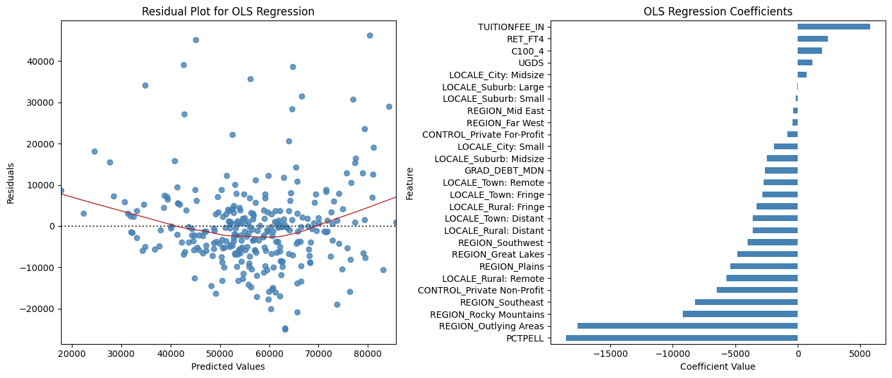
The Kernel crashed while executing code in the current cell or a previous cell. Please review the code in the cell(s) to identify a possible cause of the failure. Click <a href='https://aka.ms/vscodeJupyterKernelCrash'>here</a> for more info. View Jupyter <a href='command:jupyter.viewOutput'>log</a> for further details.
Ridge Regression
Since we say multicolinearity, we want to see if the ridge regression is a better predictor
# using data with both tutition columns for ridge regression
y = college_regression['MD_EARN_WNE_P10']
# X = all columns except the target
X = college_regression.drop(columns=['MD_EARN_WNE_P10'])
# Train-test split
X_train, X_test, y_train, y_test = train_test_split(X, y, test_size = 0.2, random_state = 42)
# ridge regression
X_train, X_test, y_train, y_test = train_test_split(X, y, test_size = 0.2, random_state = 42)
# Add a constant to the model (for statsmodels)
X_train_const = sm.add_constant(X_train)
X_test_const = sm.add_constant(X_test)
# Initialize the Ridge Regression model
ridge_reg = Ridge(alpha = 1) # Alpha is the regularization strength; adjust accordingly
# Fit the model
ridge_reg.fit(X_train, y_train)
# Predict on the testing set
r_y_pred = ridge_reg.predict(X_test)
# Calculate and print the MSE
mse = mean_squared_error(y_test, r_y_pred)
print('Ridge Regression:')
print(f'Mean Squared Error: {mse}')
# Since Ridge doesn't provide AIC, BIC directly, we focus on what's available
# Compute residuals for ridge regression
r2 = r2_score(y_test, r_y_pred)
print(f'R-squared: {r2}')
residuals = y_test - r_y_pred
# Prepare coefficient series
ridge_coefs = pd.Series(ridge_reg.coef_, index=X_train.columns)
fig, axes = plt.subplots(1, 2, figsize=(14, 6))
# Residual Plot
sns.residplot(
x=r_y_pred,
y=residuals,
lowess=True,
color='steelblue',
line_kws={'color': 'firebrick', 'lw': 1},
ax=axes[0]
)
axes[0].set_xlabel('Predicted Values')
axes[0].set_ylabel('Residuals')
axes[0].set_title('Residual Plot for Ridge Regression')
# Coefficient Plot
ridge_coefs.sort_values().plot(
kind='barh',
color='steelblue',
ax=axes[1]
)
axes[1].set_title("Ridge Regression Coefficients")
axes[1].set_xlabel("Coefficient Value")
axes[1].set_ylabel("Feature")
plt.tight_layout()
plt.show()
Ridge Regression:
Mean Squared Error: 110226157.79306602
R-squared: 0.4858301016152222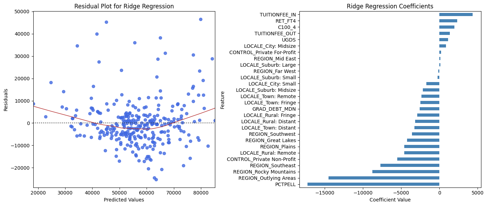
Classification Analysis
Data Processing
# Need to create the target variable
median_income = college_regression['MD_EARN_WNE_P10'].median()
college_regression['HighEarnings'] = (college_regression['MD_EARN_WNE_P10'] >= median_income).astype(int)
# defining X and y
X = college_regression.drop(columns=['MD_EARN_WNE_P10', 'HighEarnings'])
y = college_regression['HighEarnings']Feature Selection
# using SelectKBest for feature selection
# used https://scikit-learn.org/stable/modules/generated/sklearn.feature_selection.SelectKBest.html
selector = SelectKBest(k=15)
x_new = selector.fit_transform(X, y)
selected_features = X.columns[selector.get_support()]
print('Top 15 features:')
print(selected_features)
# used https://scikit-learn.org/stable/auto_examples/ensemble/plot_forest_importances.html
# creating a random forest
rf = RandomForestClassifier(random_state=42)
rf.fit(X, y)
# determing the importances
importances = pd.Series(rf.feature_importances_, index=X.columns)
# picking the top importances
top_importances = importances.sort_values(ascending=False).head(15)
plt.figure(figsize=(10, 6))
sns.barplot(x=top_importances.values, y=top_importances.index, palette='viridis')
plt.title('Top 15 Feature Importances (Random Forest)')
plt.xlabel('Importance Score')
plt.ylabel('Feature')
plt.show()
# filtering for just the top features from these two anayses
final_features = list(set(selected_features) | set(top_importances.index))
X_final = X[final_features].copy()
X_train, X_test, y_train, y_test = train_test_split(
X, y, test_size=0.2, random_state=42, stratify=y
)
# compute permutation importance on the test set
result = permutation_importance(
rf,
X_test,
y_test,
n_repeats=30, # number of shuffles per feature
random_state=42,
n_jobs=-1
)
# put into a Series for easy viewing
perm_importances = pd.Series(
result.importances_mean,
index=X_test.columns
).sort_values(ascending=False)
# look at the top 15
top_perm = perm_importances.head(15)
print(top_perm)
# plot the top 15 permutation importances
plt.figure(figsize=(10, 6))
sns.barplot(x=top_perm.values, y=top_perm.index, palette='viridis')
plt.xlabel("Mean decrease in model score")
plt.ylabel("Feature")
plt.title("Top 15 Features by Permutation Importance (Random Forest)")
plt.tight_layout()
plt.show()Top 15 features:
Index(['TUITIONFEE_IN', 'TUITIONFEE_OUT', 'GRAD_DEBT_MDN', 'RET_FT4', 'C100_4',
'PCTPELL', 'UGDS', 'REGION_Mid East', 'REGION_Southeast',
'REGION_Far West', 'LOCALE_Suburb: Large', 'LOCALE_Town: Distant',
'LOCALE_Town: Remote', 'LOCALE_Rural: Remote',
'CONTROL_Private For-Profit'],
dtype='object')/tmp/ipykernel_26673/815588487.py:21: FutureWarning:
Passing `palette` without assigning `hue` is deprecated and will be removed in v0.14.0. Assign the `y` variable to `hue` and set `legend=False` for the same effect.
sns.barplot(x=top_importances.values, y=top_importances.index, palette='viridis')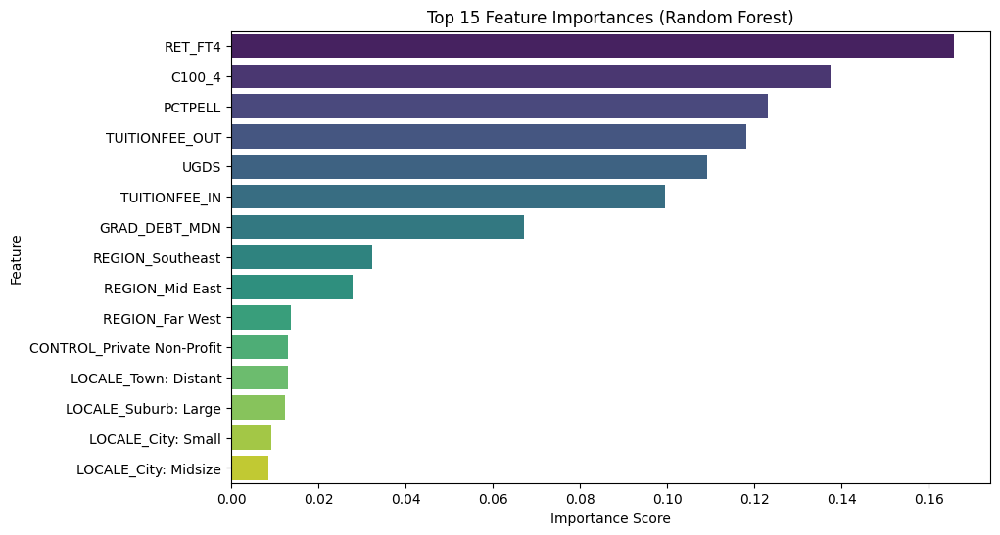
UGDS 0.075480
RET_FT4 0.071073
TUITIONFEE_OUT 0.053898
PCTPELL 0.038079
REGION_Southeast 0.036497
C100_4 0.034915
REGION_Mid East 0.031073
GRAD_DEBT_MDN 0.024068
TUITIONFEE_IN 0.010169
LOCALE_City: Midsize 0.006102
REGION_Far West 0.004294
LOCALE_Suburb: Large 0.003955
LOCALE_Town: Fringe 0.003390
LOCALE_Town: Distant 0.003164
CONTROL_Private Non-Profit 0.002260
dtype: float64/tmp/ipykernel_26673/815588487.py:57: FutureWarning:
Passing `palette` without assigning `hue` is deprecated and will be removed in v0.14.0. Assign the `y` variable to `hue` and set `legend=False` for the same effect.
sns.barplot(x=top_perm.values, y=top_perm.index, palette='viridis')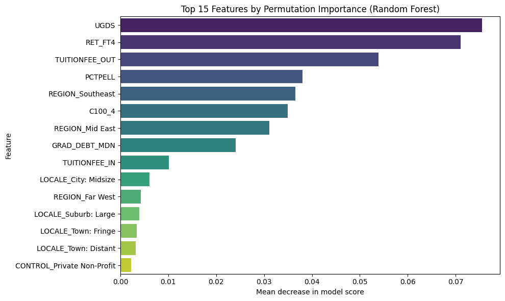
Logistic Regression
X_train, X_test, y_train, y_test = train_test_split(
X_final, y, test_size=0.2, random_state=42, stratify=y
)
# Building the logistic regression model
log_reg = LogisticRegression(multi_class = 'multinomial', solver = 'lbfgs', max_iter = 1000, random_state = 42)
log_reg.fit(X_train, y_train)
# Cross validation
start_time = time.time()
kf = KFold(n_splits = 5)
kf_f1_scores = cross_val_score(log_reg, X_train, y_train, cv = kf, scoring = 'f1_weighted')
kf_f1_average = np.mean(kf_f1_scores)
print(f"k-Fold F1-Score: {kf_f1_average:.2f}")
kfold_time = time.time() - start_time
print(f"k-Fold CV took {kfold_time:.2f} seconds")
# Making predictions
log_predictions = log_reg.predict(X_test)
print()
print("Logistic Regression Accuracy:", accuracy_score(y_test, log_predictions))
print("Logistic Regression Precision:", precision_score(y_test, log_predictions, average = 'weighted'))
print("Logisitc Regression Recall:", recall_score(y_test, log_predictions, average = 'weighted'))
print("Logistic Regression F-1 Score:", f1_score(y_test, log_predictions, average = 'weighted'))
# Visualizations
fig, axes = plt.subplots(1, 3, figsize=(22, 6))
# Confusion Matrix
ConfusionMatrixDisplay.from_estimator(log_reg, X_test, y_test, cmap='Blues', ax=axes[0])
axes[0].set_title("Confusion Matrix")
# ROC Curve
RocCurveDisplay.from_estimator(log_reg, X_test, y_test, ax=axes[1])
axes[1].plot([0, 1], [0, 1], 'k--')
axes[1].set_title("ROC Curve")
# Coefficient Plot
coef = pd.Series(log_reg.coef_[0], index=X_final.columns)
coef = coef.sort_values()
axes[2].barh(coef.index, coef.values, color='steelblue')
axes[2].set_title("Logistic Regression Coefficients")
axes[2].set_xlabel("Effect on log-odds of High Earnings")
plt.tight_layout()
plt.show()/home/codespace/.local/lib/python3.12/site-packages/sklearn/linear_model/_logistic.py:1254: FutureWarning: 'multi_class' was deprecated in version 1.5 and will be removed in 1.7. From then on, binary problems will be fit as proper binary logistic regression models (as if multi_class='ovr' were set). Leave it to its default value to avoid this warning.
warnings.warn(
/home/codespace/.local/lib/python3.12/site-packages/sklearn/linear_model/_logistic.py:1254: FutureWarning: 'multi_class' was deprecated in version 1.5 and will be removed in 1.7. From then on, binary problems will be fit as proper binary logistic regression models (as if multi_class='ovr' were set). Leave it to its default value to avoid this warning.
warnings.warn(
/home/codespace/.local/lib/python3.12/site-packages/sklearn/linear_model/_logistic.py:1254: FutureWarning: 'multi_class' was deprecated in version 1.5 and will be removed in 1.7. From then on, binary problems will be fit as proper binary logistic regression models (as if multi_class='ovr' were set). Leave it to its default value to avoid this warning.
warnings.warn(
/home/codespace/.local/lib/python3.12/site-packages/sklearn/linear_model/_logistic.py:1254: FutureWarning: 'multi_class' was deprecated in version 1.5 and will be removed in 1.7. From then on, binary problems will be fit as proper binary logistic regression models (as if multi_class='ovr' were set). Leave it to its default value to avoid this warning.
warnings.warn(
/home/codespace/.local/lib/python3.12/site-packages/sklearn/linear_model/_logistic.py:1254: FutureWarning: 'multi_class' was deprecated in version 1.5 and will be removed in 1.7. From then on, binary problems will be fit as proper binary logistic regression models (as if multi_class='ovr' were set). Leave it to its default value to avoid this warning.
warnings.warn(
/home/codespace/.local/lib/python3.12/site-packages/sklearn/linear_model/_logistic.py:1254: FutureWarning: 'multi_class' was deprecated in version 1.5 and will be removed in 1.7. From then on, binary problems will be fit as proper binary logistic regression models (as if multi_class='ovr' were set). Leave it to its default value to avoid this warning.
warnings.warn(k-Fold F1-Score: 0.80
k-Fold CV took 0.19 seconds
Logistic Regression Accuracy: 0.7728813559322034
Logistic Regression Precision: 0.7775823831391786
Logisitc Regression Recall: 0.7728813559322034
Logistic Regression F-1 Score: 0.7719854657317307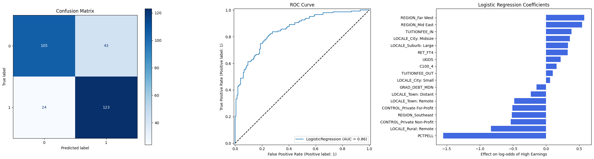
Random Forest
# creating model
rf_classifier = RandomForestClassifier()
rf_classifier.fit(X_train, y_train)
rf_predictions = rf_classifier.predict(X_test)
# cross validation for random forest
print('Random Forest Cross Validation')
start_time = time.time()
kf = KFold(n_splits = 5)
kf_f1_scores = cross_val_score(rf_classifier, X_train, y_train, cv = kf, scoring = 'f1_weighted')
kf_f1_average = np.mean(kf_f1_scores)
print(f"k-Fold F1-Score: {kf_f1_average:.2f}")
kfold_time = time.time() - start_time
print(f"k-Fold CV took {kfold_time:.2f} seconds")
# final evaluation metrics X
print()
print("Random Forest Accuracy:", accuracy_score(y_test, rf_predictions))
print("Random Forest Precision:", precision_score(y_test, rf_predictions, average = 'weighted'))
print("Random Forest Recall:", recall_score(y_test, rf_predictions, average = 'weighted'))
print("Random Forest F-1 Score:", f1_score(y_test, rf_predictions, average = 'weighted'))
# visualzations
fig, axes = plt.subplots(1, 3, figsize=(22, 6))
# Confusion Matrix
ConfusionMatrixDisplay.from_estimator(rf_classifier, X_test, y_test, cmap='Blues', ax=axes[0])
axes[0].set_title("Confusion Matrix")
# ROC Curve
RocCurveDisplay.from_estimator(rf_classifier, X_test, y_test, ax=axes[1])
axes[1].plot([0, 1], [0, 1], 'k--')
axes[1].set_title("ROC Curve")
# Feature Importance
rf_importances = pd.Series(rf_classifier.feature_importances_, index=X_test.columns)
rf_importances = rf_importances.sort_values(ascending=True).tail(15)
axes[2].barh(rf_importances.index, rf_importances.values, color='steelblue')
axes[2].set_title("Top Feature Importances – Random Forest")
axes[2].set_xlabel("Importance")
plt.tight_layout()
plt.show()
# using calibration plot to compare
# Calibration Curve
# used https://scikit-learn.org/stable/modules/calibration.html to help create this plot
plt.figure(figsize=(7, 6))
# Logistic Regression
CalibrationDisplay.from_estimator(
log_reg, X_test, y_test, n_bins=10, name="Logistic Regression", ax=plt.gca()
)
# Random Forest
CalibrationDisplay.from_estimator(
rf_classifier, X_test, y_test, n_bins=10, name="Random Forest", ax=plt.gca()
)
plt.title("Calibration Curve: Logistic Regression vs Random Forest")
plt.xlabel("Mean Predicted Probability")
plt.ylabel("Fraction of Positives")
plt.plot([0,1], [0,1], 'k--', linewidth=1) # perfect calibration line
plt.tight_layout()
plt.show()Random Forest Cross Validation
k-Fold F1-Score: 0.80
k-Fold CV took 1.76 seconds
Random Forest Accuracy: 0.7627118644067796
Random Forest Precision: 0.7645271731973888
Random Forest Recall: 0.7627118644067796
Random Forest F-1 Score: 0.7623514433226144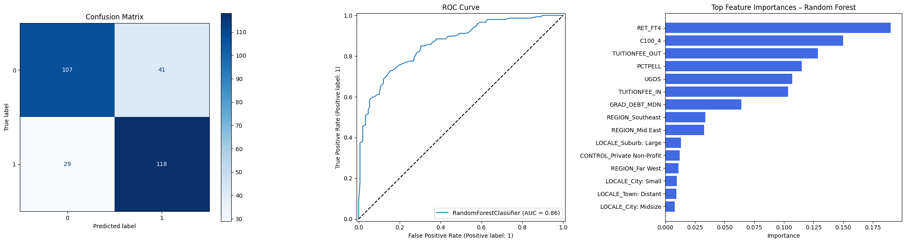
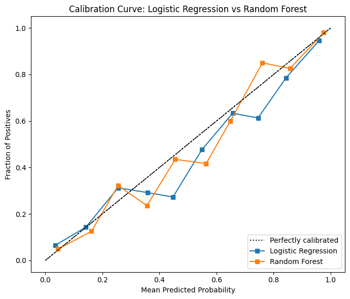